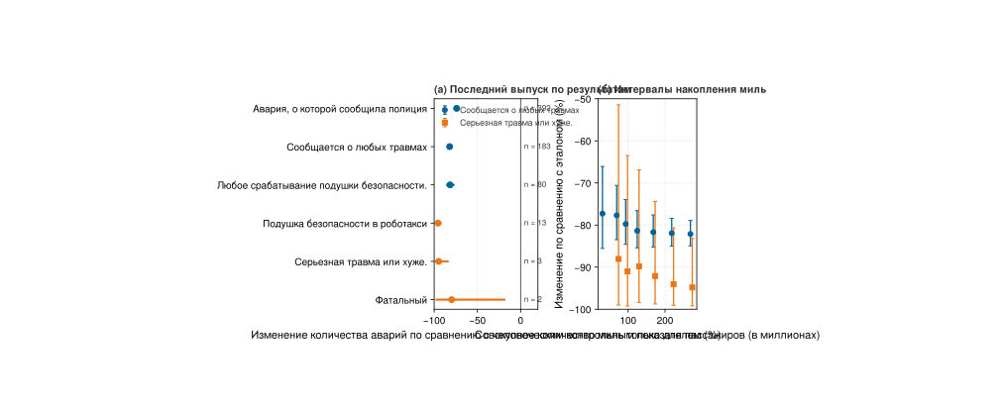
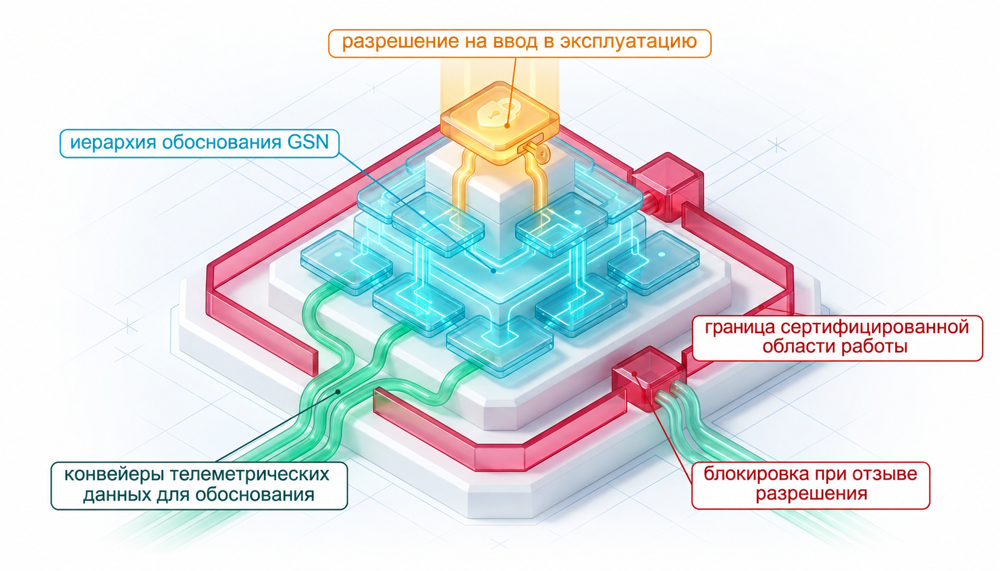
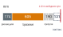
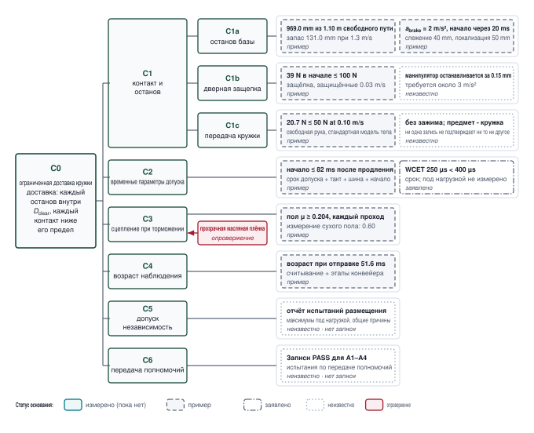
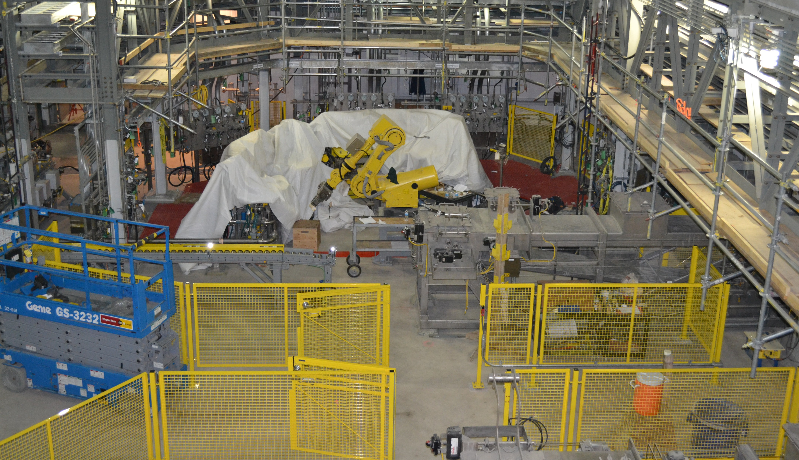
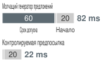
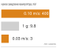

.jpg){kind=link}

Содержание главы
Содержание
- 16 Допуск к эксплуатации
- 16.1 Решение о развертывании
- 16.2 Физические критерии выпуска
- 16.3 Обоснования безопасности и претензии
- 16.4 Три приговора
- 16.5 Действующие условия приговора
- 16.6 Рассмотрение обоснования безопасности
- 16.7 Состязательный обзор
- 16.8 Манифест выпуска
- 16.9 Поддержание выпуска посредством обновлений
- 16.9.1 Модульные чехлы безопасности и обновления по беспроводной сети
- 16.9.2 Подготовка политик кандидатов перед выпуском
- 16.9.3 От квалификации к новому манифесту
- 16.9.4 Беспроводная промежуточная подготовка и откат со сторожевым таймером
- 16.9.5 Индикаторы телеметрии и безопасности, инициируемые событиями
- 16.9.6 Доказательства флота и ответственный выпуск
- 16.10 Заблуждения и подводные камни
- 16.11 Резюме
- 16.12 Историческая перспектива и дополнительная литература
16 Допуск к эксплуатации

Цель
Почему машина, которая завершает все испытания, по-прежнему не имеет доказательств, которые можно было бы допустить к людям?
Успешное испытание показывает, что машина делала в тех условиях, которым она столкнулась, тогда как разрешение на работу — это заявление о каждом условии, которому она может соответствовать в дальнейшем. Тысячи чистых пробегов по сухому полу ничего не говорят об остановке на полу, которого не касались испытания, а тормоз, который остановил машину в прошлом месяце, может не остановить ее на том же расстоянии после износа накладки. Таким образом, машина, получившая полномочия на проведение демонстраций, вводит в эксплуатацию непроверенные помещения, где первой проверкой каждого из них является событие, которое она должна была предотвратить. Принятие решения о развертывании требует указания того, какие физические утверждения подтверждаются доказательствами, при каких условиях и как долго, отказа от операции или ее сужения там, где предпосылка остается неизвестной, а также отзыва гранта при износе тормозов, смещении датчиков или изменении программного обеспечения. На причинной границе авторитет должен истечь вместе с его физическим обоснованием, потому что более поздняя программная коррекция не может отменить уже созданное движение.
Цели обучения
- Создайте обоснование безопасности претензии-аргумента-доказательства (CAE) как проверяемое инженерное утверждение DAG, связывающее ограниченные рабочие диапазоны с квалифицированными измерениями, анализом и условиями эксплуатации.
- Отличите происхождение входных данных от статуса помещения и выберите вердикт (
UNCOND,CONDилиREFUSE), который разрешает поддерживаемое операционное заявление. - Объедините данные об успешности выполнения задач, времени цикла и вмешательствах с физическими измерениями и ограничениями, поддерживающими условный допуск к эксплуатации.
- Укажите частоту вращения педалей в стоячем состоянии и проверенные реакции, от износа тормозов до отклонения калибровки, отдельно от периодов действия разрешений на выполнение.
- Диагностика неподтвержденных ордеров, скрытых контекстуальных предположений и составных проигравших посредством состязательного анализа аргумента об освобождении.
- Укажите записи, которые манифест выпуска связывает с помощью дайджеста, и условия, при которых его ворота отказываются двигаться.
- Определите, какие заявки повторно открываются при обновлении политики или программного обеспечения и почему теневая операция не может заменить квалификацию с обратной связью.
16.1 Решение о развертывании
В результате проверки на машине остался подписанный набор записей о неисправностях. Каждый из них объединяет наблюдаемую трассу при внесенной ошибке (остановившийся предлагающий, устаревший кадр, потерянные кадры полевой шины, провисшая шина) с оракулом, исправленным до пробной версии, а набор называет рабочие режимы, которые не были достигнуты в ходе пробной версии. Рядом с ним находятся записи, созданные в предыдущих главах: авторитетная запись результатов арбитражного и резервного режима работы, запись размещения планирования вычислений и изоляции, а также запись оценки производительности задач с обратной связью. В этих записях указано, как машина вела себя в тестируемых условиях. Они не говорят, какие претензии по эксплуатации теперь могут быть предоставлены машине, потому что запись о неисправности ничего не доказывает за пределами диапазона, который она выбрала, а непроверенный режим - это скорее пробел, чем удовлетворительный результат. Точность автономной проверки и чистые лабораторные демонстрации находятся в одном и том же положении. Выпуск — это шаг, который решает, претензия за претензией, какие лицензии лицензируются в указанной области эксплуатационного проектирования.
↩︎ Эмпирические доказательства, подтверждающие заявления о выпуске, установлены в Раздел 15.8.
Этот шаг является порогом, который в конечном итоге пересекает каждая машина, работающая среди людей, точкой, где строители формально предоставляют ей право действовать за пределами лаборатории. В традиционной разработке программного обеспечения развертывание в значительной степени обратимо; оператор может отозвать дефектную сборку в течение нескольких минут, ограничивая стоимость сбоя временем, необходимым для отката двоичного файла. Для физических систем запас расстояния на выпуск отличается. Каждое действие, разрешенное средой выполнения, доставляет энергию через причинную границу в физическую среду. Когда решение о выпуске ошибочно, сбой проявляется в том, что привод проезжает линию расстояния до препятствия или захват оказывает некалиброванную силу на ткани человека, и никакой откат программного обеспечения не может восстановить уже переданную кинетическую энергию. Аэрокосмическая отрасль, железнодорожный транспорт и промышленная робототехника управляют этим риском посредством четкого обоснования безопасности, структурированного и поддающегося проверке аргумента, утверждающего, что машина должна делать, при каких условиях эксплуатации и на каких доказательствах. физический ИИ наследует это бремя с дополнительными трудностями. Наученная политика не может быть доказана безопасной путем проверки ее веса, а ограниченные полевые испытания не могут выявить все редкие сбои в хвосте, и именно здесь кроются самые худшие последствия.
Мобильный складской манипулятор показывает, почему прошлые операционные успехи сами по себе не могут лицензировать развертывание. На действующем логистическом складе он должен пройти по узким проходам мимо выступающих концов стеллажа, открыть дверь клетки с пружинной защелкой и передать керамическую кружку коллеге-человеку. Каждая подзадача включает в себя отдельное физическое требование: тормозной путь внутри свободного расстояния при максимальной полезной нагрузке, ограниченное пиковое усилие на защелке и ограниченное контактное усилие во время передачи обслуживания. Безупречный тестовый запуск показывает лишь то, что машина выполняла эти движения в точных условиях этого единственного испытания. Вместо этого, обоснованное решение о выпуске должно ограничить физические изменения, с которыми машина столкнется в производстве, и продемонстрировать, что проверенная контролируемая динамика физической системы и защитные блокировки низкого уровня удерживают риск в определенных пределах во всем этом диапазоне.
Развернутая система также должна выполнять полезную работу внутри сертифицированной оболочки. Журналы оценки замкнутого цикла показывают, выполняет ли сквозная политика свои задачи, как часто приходится вмешиваться людям и какие условия окружающей среды приводят к сбою политики. Инженеры должны сопоставить эти показатели задачи с ограничениями скорости, ограничениями полезной нагрузки и пространственными ограничениями, требуемыми соображениями безопасности. Мобильная база, которая останавливается каждые несколько метров, избегает столкновений, не достигая при этом своей цели обслуживания; и наоборот, гибкая политика, которая завершает каждое номинальное испытание, не может быть предоставлена полномочию исполнительного механизма до тех пор, пока детерминированные ограждения не обеспечат безопасные границы во время сбоев восприятия. Решение о выпуске объединяет эти два требования в один рабочий профиль.
↩︎ Запись оценки успешности задачи, степени вмешательства и условий поломки в замкнутом контуре устанавливается в Раздел 7.8.
Поскольку разные объекты имеют различное освещение, трение пола и посещаемость, первоначальный случай выпуска применяется к одному объекту, опираясь на данные исследований расстояния до объекта, нагруженных испытаний торможения, калиброванных измерений ударной силы и криптографически подписанных записей о неисправностях. Вместо того, чтобы сводить готовность к развертыванию к единому контрольному баллу, решение о выпуске представляет собой ограниченное, отзывное решение, которое определяет, какие эксплуатационные утверждения действительно подтверждаются имеющимися доказательствами, при каких физических условиях и в течение какого времени. В этой главе это решение строится в том порядке, в котором его принимает судья: утверждения сначала записываются как проверяемые физические неравенства в ограниченном рабочем диапазоне, а затем организуются в аргумент, каждое звено которого называет свое доказательство. Аргумент разрешается в виде одного из трех вердиктов (полное запас расстояния на эксплуатацию, ограничение работы внутри установленных ограничений или отказ), а постоянные условия определяют, когда истекает срок действия выданного вердикта. В выработанном судебном решении все это применяется к работающей машине, состязательный анализ пытается разрушить любой оставшийся случай, а подписанный манифест выпуска привязывает окончательное решение к исполняющей машине, так что каждое последующее обновление программного обеспечения, переобученная контрольная точка или модификация оборудования проходят через одни и те же ворота.
↩︎ Подписанные записи ошибок, которые использует вариант выпуска, установлены в Раздел 15.11.
16.2 Физические критерии выпуска
Проверка развертывания, в которой учитываются совокупные оценки тестов или плавные демонстрационные видеоролики, не оставляет машине проверяемых правил относительно того, когда ее можно перемещать. На конце стойки основание должно остановиться в пределах доступного зазора; во время передачи рука должна оставаться в пределах расчетного предела контактной силы; и оба утверждения зависят от того, завершает ли путь разрешения проверку до истечения крайнего срока. В совокупности эти требования дают разрешение на выпуск по трем проверяемым физическим критериям:
Первый термин сокращает полный стоп-бюджет до Уравнение (1), по которому также взимается защитная маржа. В третьем критерии
Поскольку каждый критерий представляет собой физическое неравенство, разрешение на выпуск не может основываться на интуиции, демонстрациях или совокупных результатах тестов. Для разрешения развертывания требуется проверяемый аргумент безопасности, который связывает каждое неравенство с измеренным сроком наблюдения, границами времени выполнения для наихудшего случая, эмпирическим торможением и контактными испытаниями, а также проверенным резервным рабочим режимом. Эти физические границы также зависят от калибровки отдельной машины: преобразований ее камеры и лидарного датчика, смещения нуля совместного энкодера и констант крутящего момента двигателя. Потерянная или сдвинутая калибровка делает недействительным сертифицированный бюджет остановки, даже если двоичные файлы программного обеспечения остаются неизменными. Крепление датчика, которое смещается при эксплуатации, снижает допуск на локализацию
Для складского мобильного манипулятора вопрос выпуска заключается в том, удовлетворяют ли эмпирические и аналитические данные этим критериям для каждой из трех его задач в рамках ограниченного рабочего диапазона. Вариант выпуска определяет оцененные физические границы, указанную модель сбоя оборудования, а также проверенную лестницу разрешений и резервных рабочих режимов. Этот аргумент представляет собой обоснование безопасности, которое раздел 16.3.1 дает формальную структуру и оправдывает выдачу отзывного разрешения на эксплуатацию, пока сохраняются эти физические условия. Разрешение — это подписанный орган, согласно которому путь разрешений может допускать команды отслеживания политики (раздел 16.4). Ограниченные тестовые прогоны не могут обеспечить защиту от нехарактерных или немоделированных опасностей.
Случай выпуска определяется рабочей областью: целевой областью эксплуатационного проектирования (ODD) в сочетании с внутренними аппаратными, тепловыми и временными инвариантами машины. Выпуск для развертывания разрешает конфигурацию системы в постоянных условиях эксплуатации, дополняя, а не заменяя короткие периоды действия разрешений на выполнение, которые связывают отдельные фрагменты действий. Инспекции на месте, проверки калибровки и потактовые проверки разрешений выполняются с определенной периодичностью, продиктованной соответствующими механизмами сбоев. Конверт также фиксирует, к чему относится каждый из трех возможных вердиктов, определенных в раздел 16.4. Безусловная операция (UNCOND) охватывает весь проверенный конверт. Условная операция (COND) охватывает отдельно подтвержденное подмножество с ограниченной кинематикой или ограничениями окружающей среды. Отказ (REFUSE) не распространяется ни на что из этого. Для мобильного манипулятора предлагаемый номинальный рабочий диапазон определяет перемещение по проходу до 1.3 m/s (выбрано; см. Руководство для читателей) с нагрузкой не более 50 kg. В нем также указаны полы, обследованные с коэффициентом трения не менее 0.204 и прохождением мимо концов стойки с свободным расстоянием не менее 1.10 m. Пол трения представляет собой оптимистический экран, полученный путем деления требуемого замедления при торможении на стандартную силу тяжести в предположении, что весь вес транспортного средства приходится на ведущие колеса. Поскольку пассивные ролики несут часть нормальной нагрузки, не внося тормозную силу, ведомые колеса должны генерировать общую тормозную силу от меньшей нормальной нагрузки, поэтому фактическая квалификация должна включать усилия нагруженных колес, настройки привода привода и следы остановки. Для манипулирования предлагаемый конверт определяет подходы к двери со скоростью 0.03 m/s и передачу управления коллегам со скоростью 0.10 m/s со скоростью центральной точки инструмента (TCP).
↩︎ Область эксплуатационного проектирования и ее известные отсутствия установлены в Раздел 5.7.1.
Внутри этих границ изученная нейронная политика предлагает действия в пределах номинального диапазона задачи, но каждое предлагаемое действие требует независимого, потактового разрешения из изолированного цикла принудительного применения ограничений безопасности. Условия, специфичные для режима (таблица 1), сужают этот диапазон. Анализ захвата Раздел 14.2.4 предоставляет возможные скорости вмешательства, проверяя внутрицикловый запрос по 0.75 m/s и сканирование вне цикла по 0.15 m/s. Ни один из экранов не квалифицируется как предел автономной версии, поскольку каждый из них зависит от времени отклика человека, которое не измерялось в случае выпуска. Замедление внутри цикла справедливо только для оператора, отвечающего на ожидаемый стимул, а сканирование вне цикла уже не дает ответа 99-го процентиля. Таким образом, надежная конструкция сначала запускает собственную местную остановку базы и передает управление из состояния покоя, когда ожидание требует времени, но не требует свободного расстояния. Ограниченный режим вердикта COND еще больше сужает диапазон. На этаже, характеризующемся только режимом проверки на месте, машина работает со скоростью 1 m/s, ниже 1.23 m/s оптимистичного экрана проверки пола по всей массе, при этом по-прежнему взимается задержка между отправкой и допуском и сохраняется положительный тормозной резерв.
Правила в таблица 1 следуют строгой лестнице приоритетов: условия отказа имеют приоритет над ограничениями, специфичными для режима, которые, в свою очередь, перевешивают номинальные ограничения. Поскольку диапазоны скоростей перекрываются в разных рабочих контекстах, эти пороговые значения определяют рабочие режимы, а не отдельные числовые интервалы. Строка полезных данных показывает, чем режим отличается от интервала. Если оценка загрузки стойки устарела с момента последнего выбора, база может не пройти транзит, поскольку ее бюджет остановки предполагает известную массу. Стационарная рука может продолжать работать на основании отдельно подтвержденного заявления. Неверная оценка или измеренная перегрузка отклоняют оба варианта. Условное состояние ограничивает допустимые предложения посредством принудительного ограничения цикла принудительного выполнения ограничений. Состояние отказа отменяет разрешение на эксплуатацию, поэтому путь разрешения не допускает дальнейших команд отслеживания и управляет проверенной траекторией резервного рабочего режима. Бортовая оценка проскальзывания колес не может обеспечить перспективных гарантий зазора, поскольку она обнаруживает низкое трение только после того, как тяга уже потеряна. Тонкая пленка прозрачного масла (
↩︎ Лестница ответов режима постоянного резервного копирования, на которые подается команда отказа, устанавливается в Раздел 12.9.
В обосновании безопасности также должно быть документировано поведение машины, когда работа выходит за пределы допустимого диапазона. Пограничная телеметрия, инициируемая событиями, замораживает трассировки кольцевого буфера для проверки после инцидента (раздел 16.9.5), в то время как детерминированный путь разрешений обеспечивает соблюдение физических границ в реальном времени. Таблица 1 суммирует физические размеры, поддерживаемые мониторами среды выполнения и элементами управления сайта администрирования. Внутренние условия окружающей среды, такие как температура окружающей среды, напряжение на шине постоянного тока и степень использования вычислительной системы на кристалле (SoC), учитываются в случае выпуска посредством внесения ошибок и стресс-тестов, проводимых в соответствующих квалификационных диапазонах.
↩︎ Внутренние квалификационные диапазоны температуры, напряжения шины и вычислительной нагрузки, которые наследует корпус расцепителя, установлены в Раздел 15.2.
| Размер конверта/инвариант | Номинальный конверт | Условная граница | Жесткий отказ | Мониторинг и скорость выполнения | Цикл применения принудительного ограничения Действие и задержка |
|---|---|---|---|---|---|
| Скорость прохода | Предварительные экраны поглощения: 0.75 m/s в контуре и 0.15 m/s вне цикла; прочная конструкция останавливается перед любой передачей | Измеренная скорость выше знака 1.3 m/s (потолок 1.44 m/s) или неверная оценка скорости. | Кодировщики и IMU, каждый тик разрешения 1 ms | Зафиксировать допустимую скорость; отказаться от скорости выше подписанной | |
| Трение пола | Обследовано |
Квалифицированная оценка и поддерживаемый режим объекта ( |
Необследованный этаж или зарегистрированная пленка; прозрачная масляная пленка ( |
Обследование пола и процедура разлива на площадке; нет встроенных измерений | Ограничить скорость по зоне пола; отказаться от прохода |
| Полезная нагрузка Tote-Rack | Оценка устарела с момента последнего выбора: только задачи со стационарной рукой | Нагрузка превышает мощность или неверная оценка | Стеллажные тензодатчики, при каждом подборе | Откажитесь от прохода между проходами до повторного взвешивания. | |
| Расстояние от стойки до конца | Обследовано |
Меньшее исследуемое расстояние: более низкая скорость знаков при том же бюджете. | Необследованный конец стойки или препятствие на свободном расстоянии | обследование объекта; лидар и навигационная камера с частотой кадров | Ограничение скорости на конце стойки; остановиться перед обнаруженным препятствием |
| Подход к дверной защелке | Исходная политика: только именная табличка; измененному кандидату на восстановление требуется собственный вариант оценки и выпуска | 0.10 m/s состояние подъезда или номерного знака вне выбранного полиса | Измерение силы контакта руки в контактном контуре 2 ms | Поездка в 15 N; отказаться от неподдерживаемого подхода | |
| Передача коллегам | Скорость TCP accept_item |
Коллега присутствует без accept_item: не доходите до точки передачи |
Скорость TCP выше знака 0.10 m/s (переходный потолок 0.24 m/s) или геометрия зажима вне оцененного переходного случая. | Совместные кодировщики каждого тика разрешения; измерение силы контакта руки | Ограничить скорость TCP; отказаться от скорости выше подписанной |
Строка номинальной фиксации в таблица 1 охватывает случай выпуска базовой политики. Хотя отдельно предусмотренная кампания по восстановлению в Раздел 7.8.1 оценивает измененного кандидата в номинальных условиях и условиях смещения пластины, это экспериментальное происхождение не расширяет молчаливо установленные здесь границы контактной силы или времени. Развертывание политики восстановления требует собственной оценки и обновления обоснования безопасности.
В обоснованном заявлении о выпуске должна быть указана контролируемая динамика физической системы, предполагаемая геометрия контактов и смоделированный набор неисправностей. Решение о выпуске мобильного манипулятора основывается на трех критериях. База останавливается на расстоянии 1.10 m, прежде чем добраться до пешехода, который вышел из конца стойки и остановился. Рычаг отпирает дверь, не превышая структурного предела 100 N. Передача предмета не превышает 50 N пиковой силы контакта с коллегой. Заявление об остановке базы предполагает, что человек, оказавшись на пути, стоит на месте. Человек, продолжающий идти в сторону движущегося основания, сокращает разрыв в течение всего интервала реакции и торможения. Как показал Раздел 12.3.1, определение размера бюджета для этого подхода снизит скорость прохода до гораздо более низкого потолка для идущего человека. Таким образом, предприятие процедурно контролирует переходы в конце прохода, и это правило пересечения участка само по себе является предпосылкой, которую должно подтвердить дело об освобождении. Аргумент полного освобождения показывает, какие контакты с людьми исключаются перед воздействием, какие обнаруженные контакты подпадают под модель соответствия, а какие единичные неисправности запускают изолированный резервный режим работы. Остановка движения после удара не уменьшает первоначальную ударную силу.
Критерии контакта поступают как предпосылки из протокола исполнения, а не как расчеты, полученные в ходе проверки выпуска. Пик воздействия пружинной массы, который растет линейно со скоростью приближения (Уравнение (7)), впервые был обнаружен как эффект мягкой пружины симулятора защелки. Раздел 12.7.2 специализирует его для нетормозного упругого контакта с рукой коллеги (Уравнение (13)), используя эффективную массу руки и биомеханическую модель руки ISO/TS 15066.1 Случай освобождения оценивает эксплуатационные последствия этих физических результатов. При максимальном пределе свободного пространства руки, равном 1 m/s, даже модель переходного воздействия предсказывает 207 N, что превышает критерий 50 N в 4.1×. Следовательно, неразделенная близость коллег не может быть разрешена на полной скорости в свободном пространстве без дополнительного физического сдерживания. Для свободной руки, которая отскакивает при ударе, критерий допускает скорость приближения до 0.24 m/s. При выбранной скорости передачи 0.10 m/s модель прогнозирует переходную силу 20.7 N, что ниже критерия случая. Однако, если рука коллеги прижата к вертикальной стойке или несущей раме, потолок упадет до 0.053 m/s. При той же скорости захода на посадку 0.10 m/s зафиксированное столкновение генерирует 94.9 N, что нарушает предел. Таким образом, заявление о передаче управления является строго заявлением о переходном контакте, унаследовав две предпосылки: модель тела с сосредоточенной массой и эффективная масса точно описывают столкновение, и что геометрия передачи исключает опасность защемления или зажима. Поскольку сами по себе физические расчеты не могут гарантировать безопасное расстояние от рабочего пространства, в случае выброса необходимо установить оба помещения на основе эмпирических данных и проверки объекта.
В отличие от критериев мгновенной силы руки, требование мобильной базы заключается в интегрированном бюджете расстояния. Для подтверждения этого утверждения требуются эмпирические данные, ограничивающие возраст наблюдения за восприятием, задержки коммуникационной шины и продолжительность периода действия разрешения на исполнение. Раздел 12.3.1 измерил этот бюджет по каждому члену со скоростью прохода (Таблица 1), интегрируя Уравнение (1) с ограниченным рывками профилем торможения
Инженерный расчёт 16.1: Запасной проход
Задача: При скорости прохода 1.3 m/s какая часть свободного расстояния 1.10 m остается неизрасходованной из бюджета на остановку, какая ошибка в одном вводе приведет к его израсходованию, и сколько останется после оплаты работы по отправке-допуску?
Переменные:
- Скорость прохода
1.3 m/s (Выбрано); четкое расстояние 1.10 m (иллюстративно, заменяет обследование объекта) - Задержка перед торможением
133.6 ms (получено на основе иллюстративных терминов: 51.6 ms возраст наблюдения плюс 82 ms с момента последнего действительного продления до начала торможения) - Достоверное замедление
2 m/s² (иллюстративное) и ограничение рывка 7.11 m/s³ (производное, Раздел 11.5.2) - Допуски
50 mm и 40 mm (иллюстративно); маржа 100 mm (Выбрано) - Распределение отправка-поступление
63.3 ms (Иллюстративное распределение, Раздел 13.6.2)
Математика:
- Реакция:
1.3 m/s 133.6 ms 173.7 mm. - Торможение: Поскольку
, остановка достигает полного замедления, а 422.5 mm 182.8 mm 605.3 mm. - Запасной: 173.7 mm
605.3 mm 50 mm 40 mm 100 mm 969.0 mm, оставляя 1,100 mm 969.0 mm 131.0 mm. - Один ввод неправильный: В качестве дополнительной задержки, 131.0 mm
1.3 m/s 100.8 ms. При более слабом торможении установка шага 2, равного 736.3 mm, дает 1.39 m/s², недостаток 31 percent. - Вход платный:
1.3 m/s 63.3 ms 82.3 mm, выход резерв 48.7 mm или 37.5 ms на скорости прохода.
Результат: Бюджет тратит всё, кроме 131.0 mm чистого расстояния до приёмных работ, и всё, кроме 48.7 mm после них.
Системное понимание: Действительность гарантии остановки
Этот резерв также должен поглощать любую немоделированную неопределенность времени выполнения, чтобы его нельзя было рассматривать как дополнительную допустимую задержку или перепрофилировать как запас для передачи управления. Резерв, оставшийся после входных работ, 37.5 ms на скорости прохода, допускает меньшую непредусмотренную в бюджете задержку или недостаток торможения, чем значения безубыточности на этапе 4. Если не измерить каждый компонент временной и кинематической цепи, ничто не покажет, что резерв выдерживает задержки и колебания трения производственного цеха. Таким образом, каждый из трех критериев (стоп, фиксация и передача управления) напрямую зависит от предположений о достижимом замедлении, задержке между датчиком и исполнительным механизмом и жесткости контакта, которую не могут подтвердить никакие расчеты. Поскольку эти физические свойства могут ухудшаться в течение срока службы механического оборудования, проверяемое обоснование безопасности должно раскрывать эти зависимости во время выполнения, чтобы инженеры по сертификации могли судить, подтверждают ли эмпирические данные развертывание.

Частичный бюджет оставляет только 131.0 mm из 1.10 m свободного запаса расстояния.
16.3 Обоснования безопасности и претензии
Фотография свободного прохода не может установить, что загруженная мобильная база остановится, не доехав до препятствия. Обоснованное заявление об остановке зависит от гарантированного физического зазора, фактической тормозной способности и времени сквозного реагирования, при этом каждый параметр подтверждается эмпирическими данными, собранными в документированных условиях эксплуатации. Обоснование безопасности шаг за шагом связывает эти физические предпосылки с заявлением о выпуске, поэтому оценщик может увидеть, какие гарантии основаны на измерениях, а какие остаются непроверенными предположениями.
16.3.1 Претензии, доводы и доводы
Пакет журналов испытаний и контрольных графиков не дает рецензенту версии возможности определить, какие физические утверждения на самом деле подтверждаются данными или где скрывается невысказанное предположение. Обоснование безопасности подлежит проверке только в том случае, если его логика записана в форме, которую другой инженер может проверить и оспорить звено за звеном. На практике широко используются две нотации, обе отражают одну и ту же структуру. Структура claim-argument-evidence (CAE) делит дело на три части. Утверждение — это утверждение о поведении системы, которое является либо истинным, либо ложным. Аргумент — это причинное или индуктивное рассуждение, связывающее утверждение с сохраненной поддержкой. Доказательства состоят из калиброванных измерений, обоснованных анализов и проверенных рабочих процедур (Bishop и Bloomfield 1998 г.; Bloomfield и Netkachova 2014 г.). Нотация структурирования целей (GSN) рисует ту же структуру, что и ориентированный граф: цели верхнего уровня (утверждения) разделяются посредством явных стратегий (аргументов) на конкретные решения (элементы доказательств). Узлы контекста и предположений определяют рабочую среду, в которой находится каждая ссылка (Kelly 1998 г.; Kelly и Weaver 2004 г.). Записи о внесении ошибок попадают в этот граф непосредственно как решения, поддерживающие каждое именованное подутверждение. Поскольку решение о выпуске превращает граф доверия в обязательное эксплуатационное разрешение, случай безопасности определения 16.1 оценивается непосредственно как подлежащий исполнению вердикт о выпуске.
↩︎ Набор записей о сбоях, в котором каждая запись называет одно утверждение о выпуске, которое она поддерживает, установлен в Раздел 15.11.1.
Это разложение основано на модели практической аргументации Стивена Тулмина2 (Toulmin 1958 г.). В промышленной практике такие стандарты, как ANSI/UL 4600, требуют целевых обоснований безопасности для автономных физических продуктов (UL Standards & Engagement 2023 г.; Koopman 2023 г.). Производственные автономные автопарки используют ту же структуру. Например, Waymo организует обоснование безопасности своих операций по вызову автомобилей без водителя на основе многоуровневых динамических утверждений, показывающих отсутствие необоснованного риска, отдельно утверждая, что ее критерии принятия риска являются полными и что их эмпирическая оценка является обоснованной (Favaro и др. 2023 г.). Для воплощенного робота корневое утверждение
Определение 16.1: Обоснование безопасности утверждений-аргументов-доказательств
Обоснование безопасности утверждения-аргумента — это структурированный аргумент, которому соответствует именованная машина в заданном рабочем диапазоне и в соответствии с установленной моделью неисправности. явные физические критерии, записанные в виде утверждений, которые посредством заявленных аргументов разлагаются на сохранившиеся доказательства.
- Значимость: позволяет проверять решение о выпуске по одной ссылке за раз. Для складской машины три неравенства уравнение 1 становятся шестью требованиями, листьями которых являются отдельные помещения. Рецензент может найти одну предпосылку, например, замедление при торможении, которое не измерялось ни одним загруженным испытанием, на основании которого выносится вердикт.
- Различие: В отчете об испытаниях или результатах тестов фиксируется, что произошло в выбранных условиях. В обосновании безопасности указывается, почему эти доказательства подтверждают утверждение об условиях, которым машина еще не соответствовала, и перечисляются предположения, при которых это рассуждение перестает быть верным.
- Распространенная ошибка: Частое заблуждение заключается в том, что дело представляет собой документацию, собранную после разработки для регулирующего органа. Он написан с учетом проекта, и в архитектуре этой книги его вердикт определяет, что путь разрешений позволяет машине делать.
Обоснованность этого аргумента DAG зависит от того, насколько доказательства отличаются от доказательств. демонстрация фиксирует успешное выполнение задачи на нехарактерном наборе тестов, например, ряд чистых дверных проемов с запорной пластиной в номинальном положении или тысяча складских пробегов без столкновений. Демонстрации показывают номинальную производительность во всех наблюдаемых запусках, но они не дают математических или статистических ограничений на поведение хвоста, неисправности датчиков или крайние случаи за пределами зарегистрированных запусков. Доказательства, напротив, состоят из фальсифицируемых, откалиброванных записей с установленными границами неопределенности: распределение времени выполнения, измеренное с помощью аппаратного логического анализатора в сочетании с границами времени выполнения наихудшего случая (WCET), нагруженные испытания остановки на поврежденных поверхностях трения или следы внесения ошибок аппаратного обеспечения в цикле (HIL) в углах конверта. Доказательства должны соответствовать объему иска. Номинальные испытания могут подтвердить заявления о номинальных возможностях, а журналы калибровки могут подтвердить рамки координат датчиков, но ограничение предела конверта или реакции наихудшего случая требует систематического охвата, установленных пределов неопределенности и явных гарантий.
Для соединения доказательств с претензией требуется гарантия, принцип обоснования, который объясняет, почему измеренные данные подтверждают претензию. Для разработки нейронной политики команды часто обращаются к индуктивным гарантиям, аргументируя это тысячами безотказных тестовых эпизодов и будущей эксплуатационной надежностью. Стена воздействия, проанализированная в Раздел 7.9, показывает, почему чисто индуктивные гарантии не могут подтверждать заявления о катастрофической опасности. При доверительной вероятности 95 процентов стена безотказной работы Уравнение (9) становится
Обоснованное обоснование безопасности устраняет этот пробел с помощью детерминистских архитектурных требований. Вместо того, чтобы делать ставку на физическую безопасность при обобщении политики, система обосновывает свои требования безопасности высшего уровня независимым путем получения разрешений. Этот путь оценивает функции барьера управления Раздел 12.5 для фиксации команд исполнительного механизма и подает команду на оцененную безопасную остановку всякий раз, когда изученное предложение приближается к границе жизнеспособного набора
↪ Насколько гарантия архитектурного щита на каждую команду разбавляется уровнем опасности на уровне системы, описано в Раздел 18.3.2.
16.3.2 Контекстные предположения и самое слабое звено
Тест на остановку, проведенный на чистом, сухом бетоне под яркими складскими лампами, может оказаться неудачным, когда робот впервые входит в темный проход, если в обосновании безопасности не указано предполагаемое освещение, соответствующее времени экспозиции камеры. Каждое физическое измерение зависит от условий окружающей среды, и перемещение машины в слабоосвещенный проход может увеличить экспозицию камеры и срок наблюдения, даже если механические тормоза и шины ведут себя одинаково. Аргумент доверия должен явно указывать эти контекстуальные предположения, чтобы измерения, собранные при одном наборе условий, никогда не учитывались за пределами проверенного рабочего диапазона.
Когда рабочее предположение остается невысказанным, безопасность полностью зависит от того, удастся ли последующей проверке обнаружить результирующее отклонение. В бюджете остановки мобильного манипулятора довод незаметно предполагает, что освещение склада позволяет навигационной камере работать при номинальной экспозиции. Если при тусклом освещении время экспозиции удваивается с 16 ms до 32 ms, наблюдение получается на 8 ms старше, чем предполагалось (возраст экспозиции измеряется с середины кадра). Если не контролировать эту дополнительную задержку, это означает 10.4 mm дополнительного перемещения на скорости 1.3 m/s робота, потребляя примерно 8 percent запаса бюджета 131.0 mm. На этой машине проверка возраста приема кадров пути разрешения, проверка актуальности контракта наблюдения (Раздел 8.8), отклоняет задержанные кадры. Поскольку активный фрагмент может выполняться только до тех пор, пока его свидетельства и срок действия разрешений остаются действительными, робот вместо этого останавливается в проходе, где, как предполагалось проектом, он может работать. Команда рассматривает невысказанное предположение об освещении как необъяснимую потерю доступности, а не как столкновение, и то, что удерживало слепую зону от уменьшения расстояния, было проверкой задержки, которая ничего не знает об освещении. Проект без этой проверки потратил бы маржу молча.
Предположения об отсутствии мониторов времени выполнения таят в себе гораздо большую опасность. Механический сдвиг в креплении камеры может привести к устойчивым смещениям калибровки, в то время как каждый кадр проходит проверку актуальности и временных меток. Обоснование безопасности должно четко связывать допуски локализации с процедурами калибровки и журналами физических проверок. Если рассматривать свежие телеметрические данные как доказательство точной пространственной калибровки, то это оставляет без поддержки.
↪ Посылки, которые не может наблюдать ни один датчик на машине, и ограничения, которые они налагают на заявление о выпуске, разработаны в Раздел 18.3.1.
Обоснование безопасности – это не сводная система показателей, в которой высокая производительность в одной отрасли компенсирует дефицит в другой. Эталонная точность набора данных распознавания объектов не может компенсировать нехарактерный хвост задержки в шине CAN FD (сеть контроллеров с гибкой скоростью передачи данных), а миллионы смоделированных эпизодов обучения не могут компенсировать отсутствующие измерения износа тормозов. Когда каждое дочернее утверждение требуется, аргумент является конъюнктивным и не сильнее, чем его самая слабая требуемая посылка. На практике оно обычно слабее, поскольку накапливаются сомнения в независимых предпосылках. Для оговоренной вероятностной модели пусть каждое событие означает, что одна требуемая предпосылка действительна при установленных условиях, и пусть
Если каждая из требуемых посылок 10 выполняется с присвоенной вероятностью 0.99, соединение выполняется только с примерно 0.90, что ниже, чем у любой отдельной посылки. Требование о прекращении деятельности мобильной базы является конъюнктивным именно таким образом. Обследованное свободное расстояние, достоверное замедление при торможении, задержка начала торможения, возраст наблюдения, а также допуски по локализации и отслеживанию - все это входит в единый бюджет остановки. Неверный довод в любом отдельном термине лишает законной силы корневое утверждение, независимо от того, насколько тщательно документированы другие термины. Таким образом, оценщик обращает внимание на наименее обоснованное требуемое помещение и количество помещений, разделяющих претензию, а не на общий объем подтверждающей документации.
У этой конъюнктивной деградации есть одно принципиальное инженерное исключение. Аргумент может поддерживать утверждение посредством двух независимых ветвей, каждая из которых достаточна сама по себе, так что утверждение не выполняется только в том случае, если обе ветки терпят неудачу одновременно (Bloomfield и Littlewood 2003 г.). В отдельной оговоренной модели определите
Если каждая из двух независимых ветвей справедлива с присвоенной вероятностью 0.90, объединенное утверждение справедливо примерно с 0.99, что намного выше каждой ветки в отдельности. Равенство описывает предусмотренную модель событий. Если события с достаточным количеством ветвей просто подразумевают более широкое физическое утверждение, вероятность их объединения дает нижнюю границу, а не автоматически равна вероятности этого утверждения. Третий закон, предложение не является разрешением, вместо этого предоставляет условный архитектурный аргумент: сама по себе ошибка политики не может нарушить контролируемый инвариант остановки или контакта, пока сохраняется квалифицированный цикл принудительного ограничения, контролируемая физическая система, распознавание, синхронизация и предпосылки неисправности. Проверка политики и потиковая проверка разрешений вместе не оправдывают присвоение независимых вероятностей их успеха. 3 Утверждение C5 в таблица 2 требует доказательств того, что общие процессоры, шины памяти, шины питания или конвейеры датчиков не могут поставить под угрозу путь разрешений в соответствии с зачисленной моделью ошибок и помех. Такие доказательства изоляции касаются общих причин в пределах своей квалифицированной сферы; он сам по себе не устанавливает все предположения статистической независимости. Если независимость событий не поддерживается, двухэтапный расчет вероятности недоступен; общие причины должны быть явно представлены в аргументе. Ветвь цикла принудительного исполнения ограничений сама по себе является конъюнктивной в своих физических предпосылках, поскольку все утверждения C1–C4 должны выполняться, чтобы цикл принудительного исполнения ограничений функционировал. Разнообразие направлений защищает от провала политики; они не могут компенсировать неизмеренную физику тормозов или недостающие временные запасы, поэтому рецензент должен сверить каждый лист с фактической контролируемой физической системой.
16.3.3 Сопоставление аргумента с машиной
Безупречная арифметика предполагаемых значений торможения и задержки доказывает только то, что робот остановился бы вовремя, если бы эти цифры были правдой; он ничего не говорит о том, действительно ли физическая машина на этаже соответствует им. В то время как аналитические модели остановки четко связывают начало торможения, замедление, срок службы датчиков и ошибку отслеживания на бумаге, уравнение настолько же правильно, насколько и его физические входные данные. Рецензент выпуска должен проверить, какие параметры получены в результате измерений на производственном оборудовании, а какие остаются непроверенными проектными предположениями.
Для задач совместной манипуляции биомеханические пороги определяют аргумент контактной силы, если в заявлении явно подробно описывается целевая область тела, классификация контакта (переходный или квазистатический), распределение давления, геометрия удара и методология измерения (International Organization for Standardization 2025 г.b). Заявления мобильной базы, которые составляют основу аргумента в пользу освобождения, основаны непосредственно на эмпирических показателях тормозного пути и журналах обследования объектов. Анализ неисправностей организован двумя концептуальными основами, заимствованными из автомобильной техники. Функциональная безопасность снижает риски, возникающие из-за сбоев оборудования или систематических дефектов программного обеспечения (International Organization for Standardization 2018 г.). Напротив, безопасность предполагаемой функциональности (SOTIF) устраняет опасности, возникающие из-за недостаточной производительности или пробелов в спецификациях при отсутствии аппаратных неисправностей, например, когда детектор препятствий не может распознать работника, частично скрытого поддоном в термоусадочной упаковке (International Organization for Standardization 2022 г.). Каждый элемент аргумента в пользу выпуска требует поддержки, соответствующей его предпосылке: квалифицированных контролируемых физических систем и наблюдений за временем, обоснованного анализа или подтвержденных эксплуатационных ограничений при явных предположениях. Формальными стандартами, регулирующими эти подсистемы, являются стандарты безопасности машинного оборудования, обозначенные в раздел 16.3.4 каждому компоненту.
Оценочная таблица утверждений-аргументов-доказательств в таблица 2 определяет шесть основных утверждений к освобождению, сопоставляя каждый физический довод с его судебным решением против доказательств, представленных в этой книге. Пункт C3 показывает, почему довод недействителен. Незаметное масляное пятно на полированном бетонном полу разрушает сцепление колес и делает недействительной модель номинального замедления. Физически реализуемым условием, которое делает гарантийный довод недействительным таким образом, является побежденный (Goodenough и др. 2013 г.). Состязательная проверка безопасности охотится за этими победителями (раздел 16.7). Аналогичным образом, утверждение C6 строго зависит от протоколов испытаний, подтверждающих четыре правила передачи надзорных полномочий (A1–A4), установленных в Раздел 14.8.2.. Представленное как обеспечение DAG (рисунок 1), аргумент разделяет C1 на три физических сценария (базовая остановка, дверная защелка, передача кружки), завершает каждую ветвь в листе предпосылок, схема которого отражает зрелость его доказательств, и прикрепляет Уничтожитель масляной пленки непосредственно на C3. Поскольку ни один лист не был измерен в загруженной производственной конфигурации, каждая строка карты оценок оценивается как REFUSE, вердикт, который не дает разрешения на работу и дает команду на оцененную остановку или приостановку (раздел 16.4). Раздел 16.6 работает через причину, ветка за веткой.

REFUSE.
| Претензия | Гарантия и предположения по эксплуатации машины | Решение по доказательствам книги |
|---|---|---|
| C1. Контакт и остановка | База: частичный бюджет в размере 969.0 mm до задержки отправки-приемки, в 1.3 m/s (Таблица 1) на расстоянии 1.10 m от человека, стоящего у конца стойки, с непроверенной полезной нагрузкой в 368 kg в открытом помещении; Дверь: усилие фиксации 39 N при начале физического торможения, при этом рычаг останавливается в пределах ещё 0.15 mm (около 3 m/s²) ниже предела 100 N; Кружка: взята с конвейера под пределом центральной точки инструмента (TCP) 1 m/s для отслеживаемого намерения и передана коллеге в точке 0.10 m/s, под производным потолком переходного контакта 0.24 m/s, с контактной силой 20.7 N под 50 N критерий свободы руки, геометрия передачи, исключающая зажим, и захваченный объект принимается за кружку, которую называет задача | REFUSE: достоверное замедление, начало торможения, ошибка отслеживания и локализации, а также замедление руки являются иллюстративными; модель тела руки — это стандартное значение популяции, а не измерение этого контакта; допущения об отсутствии зажатия и о привязке цели неизвестны |
| C2. Время разрешения | Начало торможения не позднее 82 ms после последнего действительного продления; цикл принудительного применения ограничений WCET 250 μs в пределах крайнего срока 400 μs; заявленные допущения: претензия распространяется только на неисправности, в которых сохраняется путь разрешения, диагностика блокировки охватывает собственный сбой пути (Раздел 13.2), а ступень INHIBIT лестницы резервного режима работы засчитывается без тормозного пути, поэтому претензия опирается на активную ступень STOP (Раздел 12.9.1) | REFUSE: заявленному WCET не хватает подтверждающего архитектурного анализа и загруженных доказательств стресса. |
| C3. Тормозная тяга | Оптимистичный цельновесной фрикционный экран 0.204; также необходима квалифицированная остановка под нагрузкой на поддерживаемом фрикционном полу; прозрачная масляная пленка – победитель | REFUSE; открытая посылка переходит на Раздел 18.3.3 |
| C4. Возраст наблюдения | Возраст отправки навигационной камеры 51.6 ms; доказательства продолжают устаревать посредством приема и исполнения, с пороговыми значениями для конкретных событий и рабочим режимом резервного копирования устаревших данных. | REFUSE: возрастная цепочка носит иллюстративный характер. |
| C5. Независимость от разрешений | Запись о размещении сочетает в себе обоснованное выполнение с нагруженными стресс-тестами, наблюдаемые максимумы которых остаются в пределах заявленного 250 μs WCET и, следовательно, ниже крайнего срока, а также проверяются общие причины (Раздел 13.8). | REFUSE, пока не появится отчет о тестировании на размещение |
| C6. Передача полномочий | Один писатель на каждый канал исполнительного механизма; ни один источник не обходит более высокий уровень полномочий или проверку разрешений; неподтвержденная передача обслуживания отступает на расстояние, полученное из |
REFUSE, если в каком-либо из A1–A4 отсутствует запись о неисправности PASS (Раздел 15.11.1); ограничиться локальной работой, если только в случаях с удаленным каналом произошел сбой |
Контрольная точка 16.1: Декомпозиция обоснования безопасности и гарантии
Прежде чем представить обоснование безопасности на рассмотрение, проверьте его структуру:
Система показателей обеспечивает строгое разделение между требованиями физической безопасности и эмпирическими данными, доступными для их обоснования. Однако даже когда каждая внутренняя гарантия связана с измерениями аппаратного обеспечения, команда инженеров не выбирает свою собственную иерархию снижения рисков или рейтинги защиты в вакууме. Рецензент релиза должен соблюдать эту доказательную дисциплину по всему дереву гарантий, одновременно проверяя, какие внешние механизмы и нормативные стандарты регулируют каждую ветвь.
16.3.4 Карта стандартов для беговой машины
Сертификация промышленного мобильного манипулятора на соответствие стандартам дорожных транспортных средств или стандартам на фиксированную руку, которые игнорируют движущуюся основу, оставляет нераскрытыми опасности, связанные с движущейся рукой на движущейся основе. Прежде чем санкционировать развертывание, оценщик должен установить, какие формальные стандарты и правила регулируют каждую подсистему, и проверить, где были собраны соответствующие доказательства. Поскольку эта ходовая машина представляет собой промышленный мобильный манипулятор, а не автономное дорожное транспортное средство, ее формальный путь сертификации соответствует директивам промышленного оборудования, а не автомобильным стандартам. ISO 12100 устанавливает общую структуру управления рисками. Команда инженеров выявляет опасности, оценивает риски и применяет трехступенчатую иерархию снижения: сначала безопасная конструкция, затем инженерные средства защиты, а затем предупреждения пользователей и рабочие процедуры (International Organization for Standardization 2010 г.). Каждый стандарт в таблица 3 относится к определенному уровню этой иерархии. Автономия и автомобильные стандарты появляются как заимствованные инженерные методы, предоставляя словарь для изученной политики, изменений в распределении и гарантийных случаев, которые традиционные промышленные стандарты только начинают принимать.
| Стандарт или регулирование | Издание (по состоянию на 2026 г.) | Чем он управляет | Где это применимо на работающей машине | Применяется в |
|---|---|---|---|---|
| ISO 12100 (International Organization for Standardization 2010 г.) | 2010 | Оценка рисков и трехэтапное снижение рисков для любой машины | Список опасностей от C1 до C6 | Раздел 15.6 |
| ISO 13849-1 (International Organization for Standardization 2023 г.a) | 2023 (4-е изд.) | Части систем управления, связанные с безопасностью, классифицированные по уровню производительности (PL от a до e) | Срок действия разрешения MCU безопасности и контрольный таймер контрольного сигнала, который запускает STO или SS1; включающие устройства. Вступительные испытания не оцениваются. | Раздел 12.9.3, Раздел 13.2, Раздел 14.3.1 |
| IEC 61508 (International Electrotechnical Commission 2010 г.) | 2010 (2-е изд.) | Общая функциональная безопасность электрических, электронных и программируемых систем, оцененная по уровню полноты безопасности (SIL); родитель привода привода и отраслевых стандартов | Тот же сторожевой таймер и триггер остановки, что и в номинальной прошивке MCU, и его отсутствие помех. | Раздел 4.7, Раздел 13.6 |
| IEC 61800-5-2 (International Electrotechnical Commission 2016 г.b) | 2016 (2-е изд.) | Функции безопасности приводов силовых приводов: Safe Torque Off (STO), Safe Stop 1 (SS1), безопасное ограничение скорости. | Приводы приводов основания и рычага; последовательность остановки | Раздел 4.6, Раздел 12.9.2 |
| IEC 60204-1 (International Electrotechnical Commission 2016 г.a) | 2016 | Электрооборудование машин, в том числе категорий остановки 0, 1 и 2 | Категория останова, которую реализует каждая ступень резервного режима работы на приводах исполнительных механизмов. | Раздел 12.9.2 |
| ISO 3691-4 (International Organization for Standardization 2023 г.b) | 2023 (2-е изд.) | Беспилотные промышленные грузовики и их системы: обнаружение персонала, остановка, зоны работы | Мобильная база в проходах; правило пересечения сайтов | Раздел 12.3, Раздел 9.7 |
| ISO 13855 (International Organization for Standardization 2024 г.a) | 2024 (3-е изд.) | Расположение средств защиты относительно приближения человеческого тела | Защитное поле сканера; скорость приближения |
Раздел 12.9.3 |
| ISO 10218-1 и -2 (International Organization for Standardization 2025 г.a, 2025 г.b) | 2025 | Промышленные роботы (Часть 1); роботизированные приложения и ячейки, включая требования к приложениям для совместной работы, ранее опубликованные как ISO/TS 15066 (Часть 2). Часть 2 исключает опасности мобильности при интеграции манипулятора с мобильной платформой. | Рука, открытие двери, передача кружки; не рука движется по основанию | Раздел 12.7.2, Раздел 14.3.1 |
| ISO/TS 15066 (International Organization for Standardization 2016 г.) | 2016 г.; на доработке | Модель тела и данные о силе и давлении в области тела для совместного контакта; остается опубликованным | Значения рук |
Раздел 12.7.2 |
| ANSI/A3 R15.08-1 и -2 (Association for Advancing Automation 2020 г., 2023 г.) | 2020 г. (подтверждено в 2026 г.); 2023 год | Промышленные мобильные роботы в Северной Америке: робот, в том числе с манипулятором (IMR Type C) (Часть 1); Системы и приложения IMR (Часть 2) | Вся машина, включая стрелу, перемещающуюся на основании, что исключено ISO 10218-2. | Эта глава; Раздел 12.9.3 |
| ISO 26262 (International Organization for Standardization 2018 г.) | 2018 (2-е изд.) | Функциональная безопасность дорожного транспортного средства: опасности от случайного оборудования и систематических неисправностей | Заимствованный метод: декомпозиция неисправностей, подтверждение выполнения работ по безопасности. | Раздел 15.11.1 |
| ISO 21448 (International Organization for Standardization 2022 г.) | 2022 | Безопасность дорожного транспортного средства по назначению: опасности без неисправности | Заимствованный метод: недостатки восприятия и предлагающего | Раздел 15.11.1, Раздел 5.10.4 |
| ANSI/UL 4600 (UL Standards & Engagement 2023 г.) | 3-е изд., 2023 г. | Целевое обоснование безопасности для автономных продуктов с показателями безопасности и независимой оценкой | Аргумент освобождения и его мониторинг на местах | раздел 16.3.1, раздел 16.9.5 |
| ISO/PAS 8800 (International Organization for Standardization 2024 г.b) | 2024 | Безопасность элементов ИИ в дорожных транспортных средствах: жизненный цикл безопасности ИИ, данные, аргументы в пользу уверенности | Заимствованный метод: изученный предлагающий и его данные | Раздел 5.11, Раздел 7.8 |
| Регламент (ЕС) 2023/1230 (European Parliament and Council of the European Union 2023 г.) | Применяется с 20 января 2027 г. | Регламент ЕС по машинному оборудованию: основные требования, сторонняя оценка функций безопасности машинного обучения, существенные изменения | Вся машина на рынке ЕС; его обновления по беспроводной сети | раздел 16.9.1 |
| Регламент (ЕС) 2024/2847 (European Parliament and Council of the European Union 2024 г.b) | Применяется с 11 декабря 2027 г. | Закон о киберустойчивости: требования кибербезопасности для продуктов с цифровыми элементами, обработка уязвимостей, обновления безопасности. | Канал обновления, подписанные изображения и отчеты об уязвимостях автопарка. | раздел 16.9.1 |
Два стандарта на карте требуют четкой границы, поскольку беговая машина сочетает в себе мобильную робототехнику и фиксированные манипуляции. ISO 10218-2:2025 регулирует промышленные робототехнические системы и коллективные рабочие ячейки, но он явно исключает кинетические опасности, возникающие, когда манипулятор едет на мобильной платформе (International Organization for Standardization 2025 г.b), которая является конфигурацией этой складской машины. И наоборот, стандарт ISO 3691-4 рассматривает мобильную базу как беспилотный промышленный грузовик. Стандартом, который устраняет этот пробел, рассматривая мобильный манипулятор как единое целое, является ANSI/A3 R15.08. Установка активного манипулятора на передвижную платформу классифицирует машину как промышленный мобильный робот (IMR) типа C, а Часть 2 устанавливает требования безопасности для интеграции этого комбинированного устройства в активный объект (Association for Advancing Automation 2020 г., 2023 г.). В юрисдикциях, где R15.08 не имеет законодательного статуса, совокупные опасности, связанные с мобильностью и манипуляциями, возвращаются к первичной оценке риска машины по стандарту ISO 12100.
Вторая граница касается того, какие уровни пути разрешения имеют формальные рейтинги безопасности. Как установлено Раздел 12.9.3, единственной номинальной функцией в пути разрешения является истечение срока действия разрешения MCU безопасности и сторожевой таймер тактового сигнала, который устанавливает безопасное отключение крутящего момента (STO) или безопасный останов 1 (SS1) на приводах электродвигателей, когда действительные продления прекращаются. Вступительные проверки, оценивающие нейронные предложения, не имеют рейтинга. Сертифицированные функции приводов электроприводов, сертифицированного по безопасности лазерного сканера и контроллера безопасности манипулятора расположены под трактом разрешений. Таким образом, что касается выпуска, официальные заявления о защите для каждой контролируемой опасности лежат на этом сторожевом органе и этом сертифицированном слое. Аргумент о выпуске по-прежнему использует проверки допуска программного обеспечения на предмет эксплуатационной полезности и номинального предотвращения опасностей, но любое заявление об опасности, которое зависит только от программного обеспечения без рейтинга, остается эмпирической предпосылкой, а не сертифицированной функцией безопасности.
Соблюдение законодательства достигается за счет физического ИИ через закон о безопасности продукции, а не через отдельные правила искусственного интеллекта, и самое серьезное последствие для выпуска касается обновлений. В соответствии с Регламентом Европейского Союза по машинному оборудованию (European Parliament and Council of the European Union 2023 г.) существенная модификация — это любое физическое или цифровое изменение, внесенное после развертывания, которое не предусмотрел первоначальный производитель и которое представляет новую опасность или повышает существующий риск, достаточный для того, чтобы потребовать дополнительной защиты. Таким образом, организация, которая распространяет непроверенное обновление модели по беспроводной сети, может по закону стать производителем модифицированной машины со всеми обязательствами, вытекающими из этой роли (раздел 16.9.1). Тот же нормативный акт требует проведения третьей стороной оценки соответствия4 для машин, компоненты безопасности которых имеют полностью или частично саморазвивающееся поведение и используют машинное обучение для выполнения функций безопасности, поэтому изученная функция безопасности не может быть сертифицирована самостоятельно. Его основные требования также непосредственно ограничивают обучение. Пределы каждой функции безопасности должны быть задокументированы в оценке рисков производителя. Никакое правило или параметр, генерируемые машиной, даже на этапе обучения, не могут изменить эти пределы, когда изменение может создать опасную ситуацию (Приложение III, раздел 1.2.1). Сохранение обученного предлагающего вне пути разрешений отвечает этому требованию только в том случае, если аргумент безопасности не зависит от изученного поведения предлагающего. Два соседних акта достигают одной и той же машины. Закон ЕС об искусственном интеллекте, Регламент (ЕС) 2024/1689 (European Parliament and Council of the European Union 2024 г.a), с поправками, внесенными в июле 2026 года Регламентом (ЕС) 2026/1744 (European Parliament and Council of the European Union 2026 г.), помещает Регламент о машинном оборудовании в раздел B Приложения I, поэтому правила безопасности, специфичные для искусственного интеллекта, для машин проникают через структуру машинного оборудования. Комиссия должна принять делегированные акты, которые включат эти правила в Приложение III к Регламенту по машинному оборудованию и будут применяться до 2 августа 2028 года. Поскольку робот получает обновления по сети, он также является продуктом с цифровыми элементами в соответствии с Законом о киберустойчивости (European Parliament and Council of the European Union 2024 г.b), который требует обработки уязвимостей и безопасных обновлений в течение всего периода поддержки производителя, по крайней мере, пяти лет, если не ожидается, что продукт будет использоваться за меньшую цену. Его обязанность сообщать об активно эксплуатируемых уязвимостях вступает в силу с 11 сентября 2026 года, раньше остальных положений закона. Таблица 3 перечисляет даты, начиная с которых применяются другие обязательства. Эти вехи не меняют лежащую в основе физику или системную инженерию; они устанавливают календарные даты, к которым законные органы потребуют проверяемого обоснования безопасности.
Карта стандартов также отмечает границу между установленными законом обязательствами и архитектурой системы, разработанной в этой книге. Формальные стандарты предписывают документированные аргументы, номинальные защитные функции и независимую оценку третьей стороны. Вердикты, подписанные дескрипторы возможностей и манифест выпуска, разработанные в оставшейся части этой главы, представляют собой одну инженерную архитектуру для переноса этих обязательств в систему времени выполнения. Обоснование безопасности, принятое до развертывания, остается обязательным для машины еще долгое время после того, как инспекторы покинут цех.
16.4 Три приговора
Рассматривая подписание релиза как неофициальную бумажную записку, вынуждают команды либо запрещать эксплуатацию полезной машины из-за непроверенного пограничного случая, либо разрешать её работу с недоказанными предположениями. Каждая строка таблица 2 заканчивается вынесением решения, а решение о выпуске разрешает весь DAG утверждения в один из трёх вердиктов: безусловная операция, условное срабатывание, или отказ от работы. В архитектуре этой книги эти вердикты представляют собой дескрипторы возможностей с криптографической подписью, загружаемые в микроконтроллер безопасности реального времени до подачи питания на силовые ступени двигателя, а не рекомендательные сертификаты или административные документы. Действительным дескриптором является разрешение на эксплуатацию: пока оно действует, путь разрешений может допускать команды отслеживания политики внутри конверта, который называет дескриптор, а когда оно отозвано или отсутствует, путь разрешений не допускает ни одного. Хотя стандарты безопасности не предписывают этот конкретный механизм (раздел 16.3.4), квалифицированный шлюз и путь разрешений налагают ограничения аутентифицированного дескриптора на физическую работу. Первый вердикт, безусловная операция (UNCOND), разрешает отслеживать предложения во всем рабочем диапазоне, указанном в подписанном манифесте выпуска, при условии, что его постоянные условия постоянно проверяются. Каждое заявление об опасности в этом случае безопасности требует квалифицированных измерений, обоснованного анализа или подтвержденных эксплуатационных ограничений, применимых к указанной физической объекту управления, распределению полезной нагрузки, области эксплуатационного проектирования и набору неисправностей. Тепловая мощность тормозов, тормозной зазор и пределы ошибок слежения должны соответствовать этому диапазону, а независимые проверки разрешений должны проводиться везде, где изученные предложения политики управления могут достичь физических исполнительных механизмов. Вердикт не устраняет остаточные или вновь возникающие опасности; он разрешает работу исключительно в соответствии с оцененными претензиями и требует обнаружения и безопасного вывода в рамках бюджета квалифицированного реагирования в случае отказа физического допущения.
Определение 16.2: Освободить вердикт
Вердикт выпуска — это подписанное решение, которое устанавливает, какие полномочия может предоставить путь разрешений именованной машины: UNCOND для полного оцененного рабочего диапазона, COND для отдельно подтвержденный ограниченный конверт или REFUSE, когда какая-либо требуемая посылка отсутствует, противоречит или неизвестна, в каждом случае только до тех пор, пока сохраняются ее постоянные условия.
- Значимость: превращает самую слабую посылку аргумента в рабочий предел машины на
. Согласно наглядному свидетельству этой книги, каждое утверждение несет в себе неизвестную предпосылку, поэтому вердикт складской машины — REFUSE. Установленный набор записей об остановках и этажах с нагрузкой будет поддерживатьCONDна уровне 1 m/s на проверенных этажах, ниже 1.23 m/s оптимистического частичного потолка по всей массе. - Различие: результат теста фиксирует результат отдельного испытания, тогда как ухудшенный режим — это режим работы автономного резервного копирования во время выполнения, запускаемый во время выполнения. Напротив, вердикт о выпуске выносится до развертывания: он называет квалифицированный конверт и эмпирические данные, на которых он основан, оставляя при этом границу предложения фиксированной, поскольку путь разрешения продолжает проверять каждое предлагаемое действие индивидуально.
- Распространенная ошибка: Распространённым заблуждением является то, что условный вердикт (
COND) может исправить неполное обоснование безопасности, игнорируя недоказанное утверждение. Вместо этого ограниченный диапазон требует собственных доказательств и аналитических ограничений; нерешенная предпосылка в первом случае приводит к тому, что режим работы решительно отвергается.
16.4.1 Границы ограниченной работы и доступа
Когда в обосновании безопасности отсутствуют доказательства движения по проходу на полной скорости или контакта с открытым полом, разрешение роботу работать в соответствии с неофициальными инструкциями по эксплуатации приводит к тому, что путь разрешения устанавливает неправильные ограничения. Второй вердикт, условная операция (COND), применяется, когда эмпирические данные подтверждают заявленные утверждения об опасности в пределах ограниченного подмножества оболочки и привязывают путь разрешения к этим более узким ограничениям. На работающей машине COND выбирает предварительно проверенную конфигурацию безопасности, подобно тому, как контроллеры промышленной безопасности и защитные оптические сканеры переключаются между предварительно проверенными наборами полей 5 и профилями контроля скорости. Все ограниченные кинематические пороги (COND) — это автономный контракт перед развертыванием, который ограничивает рабочий диапазон машины до повторного вынесения решения. ухудшенный режим — это рабочий режим оперативного резервного копирования, предварительно оцененный и названный в подписанном выпуске, который вызывается путем разрешения, когда активная подсистема теряет телеметрию или избыточность датчиков (раздел 16.5.3 размеры один для база). Затем выпуск устанавливает физические, кинематические или экологические границы, которые исключают непроверенные опасные состояния, такие как пониженная скорость соединения, ограниченный диапазон освещения или физический барьер, который удерживает людей за пределами рабочего пространства манипулятора. Там, где контактная сила не может быть ограничена для неразделенного совместного присутствия, случай ограниченного выпуска может потребовать физического разделения: рисунок 2 иллюстрирует желтое сетчатое ограждение по периметру вокруг промышленного производственного участка. Для признания этого разделения необходимы подтвержденные доказательства блокировки доступа и остановки, показывающие, что защитная реакция завершается до опасного доступа.

Ограждение исключает неразделенный контакт, не допуская попадания людей в опасный объем. Альтернатива, которая позволяет людям совместно контролировать этаж, скорость и разделение (SSM, Раздел 12.9.3), требует другого утверждения доступа, чем требование остановки неподвижного человека C1. Расстояние разделения должно учитывать скорость приближения человека как во время реакции системы, так и при физическом замедлении, смещение робота перед началом торможения, выполняемый профиль торможения и неопределенность измерений. Складской случай сохраняет правило пересечения площадок; инженерные группы не могут заменить в этом контексте модель остановки неподвижного человека и заявить, что достигли неразделенного сотрудничества человека и робота на открытом пространстве.
Каждое количественное условие, связанное с вердиктом о выпуске, называет эксплуатационный предел, который обеспечивает путь разрешения, сохраняя явный запас ниже расчетного физического потолка. Передача товара иллюстрирует это маржинальное требование. Контракт подписывает TCP скорость ниже абсолютного потолка, который допускает критерий контакта под Уравнение (13).. Разрыв между этими двумя скоростями объясняет ненаблюдаемую физическую эволюцию между выборками дискретных датчиков: рост скорости между моментами выборки, шум квантования энкодера и задержку привода привода во время принудительного ограничения. Контракт, подписанный на теоретическом потолке, оставляет нулевой запас для этих условий физической задержки, а в случае выпуска требуются измеренные эмпирические границы для каждого условия, прежде чем подписанная эксплуатационная скорость может быть принята.
Состояние проверяемого пола следует той же дисциплине. Там, где режим проверки на месте подтверждает коэффициент трения всего 0.12, на примере экрана «полная масса на ведущих колесах» используется оптимистичный потолок тяги
Третий вердикт, отказ в работе (REFUSE), является обязательным, если в обосновании безопасности отсутствуют гарантии, нехарактерные хвостовые задержки, неполное покрытие при внедрении ошибок или неконтролируемые режимы отказа. Для систем, в которых снятие крутящего момента причиняет непосредственный физический вред (например, прямоходящие двуногие гуманоиды, падающие под действием силы тяжести), REFUSE не может просто обесточить фазы двигателя до нулевого крутящего момента; он должен выполнить расчетный, механический спуск или удержание сидя. Если время выполнения цикла принудительного ограничения безопасности в наихудшем случае при назначенном вычислительном размещении никогда не было проверено на соответствие его крайнему сроку 400 μs, или если кампания по внедрению сбоев пропустила сбои по общей причине, выявленные в топологии развертывания, опасность остается неизмеренной и не может поддерживать выпуск. Отказ также является обязательным, когда физические измерения противоречат математической модели, лежащей в основе термина бюджета безопасности, например, испытания на остановку под нагрузкой, которые приводят к замедлению ниже 2 m/s², предполагаемого моделью торможения.
Вердикт об отказе – это действенный инженерный результат, а не административный тупик. Он перенаправляет давление расписания на доказательства, указывая на точную неработающую ссылку в утверждении DAG. Если в выпуске отказано, поскольку испытания на остановку под нагрузкой противоречат модели торможения, команда инженеров не обсуждает толерантность к риску. Вместо этого разработчики повторяют испытания физического торможения при максимальной массе полезной нагрузки до тех пор, пока кампания квалифицированных испытаний и ее анализ неопределенности не подтвердят достоверную нижнюю границу замедления. Затем они повторно рассчитывают бюджет остановки на основе этой нижней границы и отправляют на повторное решение только тогда, когда бюджет прохода закрывается на основе проверенных данных. В вердикте об отказе указывается точный эмпирический тест, который должен пройти, прежде чем может быть продолжено повторное вынесение решения.
Ответственность за решение об освобождении должна нести поименованное лицо. ведущий системный судья вместо того, чтобы быть разделенным между командами разработчиков. Когда команда видения утверждает метрики восприятия, поставщик приводов — номиналы крутящего момента, а команда машинного обучения — конвергенцию политик, каждая группа может предположить, что запас прочности удерживается на другом уровне. Только ведущий судья подтверждает, что интегрированная физическая машина удовлетворяет требованиям безопасности. Это подписание привязывает вердикт о выпуске к определенному набору технических записей: криптографические дайджесты проверенных весов политик, журналы калибровки для определения силы контакта манипулятора, эмпирические измерения начала торможения в сочетании с обоснованными границами реакции на худший случай и полностью загруженные испытания остановки, устанавливающие достоверные пределы замедления. Судья подписывает манифест о выпуске закрытым ключом, хранящимся внутри аппаратного модуля безопасности.6 привязка манифеста к ключу подписи организации и записи о подписании. Среда выполнения робота сверяет эту цифровую подпись с открытым ключом, закрепленным в его аппаратном корне доверия, прежде чем включать исполнительные механизмы.
↪ Подпись судьи как одно из нескольких решений, стоящих за каждым признанным действием, каждое из которых требует имени владельца, разработано в Раздел 17.2.
Подпись судьи фиксирует внутреннюю приемку проектной организации, тогда как внешняя сертификация требует независимой оценки. UL 4600 требует независимой оценки автономного обоснования безопасности (UL Standards & Engagement 2023 г.), а оборудование, основные функции безопасности которого основаны на машинном обучении, подпадает под действие таких правил, как Регламент Европейского Союза по машинному оборудованию, которые требуют оценки соответствия третьей стороной (раздел 16.3.4). Эксперт, который не составлял обоснование безопасности, высказывает независимый взгляд на предположения, которые сформировали его компромиссы. Организационное разделение само по себе не обеспечивает вероятность случайной ошибки или статистическую независимость, требуемую уравнение 3. Таким образом, в манифесте о выпуске должен быть сохранен полный объем необработанных вещественных доказательств, необходимых для независимого аудита, а не только окончательный вердикт.
Судья в конечном итоге подписывает одно из трех решений, кратко изложенных в таблица 4. Условный вердикт требует своего собственного, независимо подтвержденного ограниченного конверта; нерешенный пробел в номинальном аргументе не может быть переименован в операционное ограничение. Ни один приговор никогда не выходит за рамки предложения. Как в UNCOND, так и в COND изученные политики предлагают только возможные действия, в то время как детерминированный цикл обеспечения принудительного ограничения безопасности независимо допускает или блокирует каждую команду управления, как того требует принцип 1. Вердикт о выпуске устанавливает физический конверт, который обеспечивает путь разрешения; он никогда не предоставляет ученой политике бесконтрольную власть.
| Подписанный приговор | Требуются доказательства | Ограничения разрешений и времени выполнения | Триггер истечения срока действия или отказа |
|---|---|---|---|
UNCOND |
Заявление о полном рабочем диапазоне, измеренные контролируемые физические системы и временные ограничения, независимо проверенные разрешения и резервный рабочий режим. | Политика предлагает полный подписанный пакет задач; каждое действие проходит цикл принудительного ограничения | Доказательства, конфигурация, калибровка или постоянная предпосылка терпят неудачу |
COND |
Претензия по ограниченному рабочему диапазону и собственные доказательства, ограничения и покрытие неисправностей | Политика предполагает только в пределах подписанных сниженных лимитов; каждое действие проходит цикл принудительного ограничения | Любая ограниченная посылка становится ложной или неизвестной. |
REFUSE |
Отсутствующие, противоречивые, просроченные или непроверенные важные доказательства | Нет разрешения на эксплуатацию; выполнить оцененную остановку или удержание, ступенька резервной лестницы режима работы, случай выпуска проверяется для объекта управления | Повторное судебное решение с исправленными доказательствами |
Каждый вердикт в таблица 4 подписывается относительно физического состояния машины на момент оценки. Таким образом, в правом столбце таблицы каждое разрешение на эксплуатацию сочетается с явным триггером истечения срока действия или отказа, поскольку тормозная накладка или крепление датчика, прошедшие проверку перед вводом в эксплуатацию, не остаются в состоянии ввода в эксплуатацию. Поскольку физически объект управления со временем изнашивается и дрейфует, вердикт о выпуске остается в силе только до тех пор, пока проверки во время выполнения, запланированные измерения и принудительные процедуры на объекте продолжают проверять ее постоянные предпосылки.
16.5 Действующие условия приговора
Подписанный выпуск может потерять силу без каких-либо изменений в базовом программном обеспечении. Тормозные накладки изнашиваются, кронштейны камер смещаются под постоянной вибрацией, а движение транспорта на складе полирует бетонные полосы до тех пор, пока не упадет сцепление с дорогой. Когда эти физические предпосылки смещаются, иск об остановке, утвержденный судьей, больше не имеет силы. Постоянные условия связывают оперативный вердикт с этими физическими базовыми показателями, определяя явную периодичность наблюдения для каждого помещения наряду с детерминированными реакциями резервного режима работы в случае неудачной проверки. Поскольку режимы сбоев возникают в аппаратном обеспечении и среде, графики их наблюдения должны соответствовать механизмам физической деградации, а не графикам программных спринтов. Обоснование безопасности, поддерживаемое таким образом, и его достоверность, обновляемая на протяжении всего срока эксплуатации по мере изменения наблюдаемых данных, представляет собой то, что в литературе по безопасности называется динамическим обоснованием безопасности (Denney и др. 2015 г.).
16.5.1 Деградация, дрейф и частота наблюдений
Ни один из трех приговоров не является постоянным грантом. В механических соединениях возникает люфт, поверхности трения изнашиваются, оптические линзы собирают пыль, меняются условия эксплуатации. Таким образом, работа в соответствии с безусловным (UNCOND) или условным (COND) вердиктом влечет за собой постоянные обязательства на протяжении всего срока развертывания. Блокнот 16.1 показывает, насколько малый износ выдерживает стопорное приспособление. Достоверное замедление 31 percent ниже предполагаемого 2 m/s² расходует весь частичный запас, а меньшая потеря расходует резерв, который остается после начисления платы за прием, не оставляя допуска на задержку восприятия или изменение тяги. Накладка, которая изнашивается настолько сильно, обнаруживается на конце стойки как перебег, если только ухудшение качества не приводит к состоянию стоянки, например, при запланированном пробном торможении под нагрузкой или автоматической предсменной диагностике тормозов, прежде чем машине будет разрешено въехать в проход. Каждое эксплуатационное обязательство сочетает физическое допущение с автоматическим детектором и немедленным устранением последствий, устанавливая постоянное состояние, привязанное к вердикту о выпуске.
Смещение крепления датчика может незаметно нарушить локализацию, в то время как каждый кадр камеры остается четким и свежим. Ежедневные температурные циклы и вибрация машины изменяют внешнюю геометрию датчика, а откат программного обеспечения не может повторно выровнять физически смещенный кронштейн. Таким образом, обоснование безопасности должно требовать квалифицированного онлайн-обнаружения смещения или плановой физической повторной калибровки, устанавливая интервалы проверки с учетом основной скорости механического износа. Криптографическая контрольная сумма подтверждает только то, что сохраненный файл калибровки соответствует артефакту сборки; это не дает никаких доказательств того, что физическая камера все еще находится в этой смоделированной позе.
Вердикт о выпуске зависит от физических допущений с сильно различающимися графиками наблюдения. Например, оптимистичный полновесный тяговый экран мобильного манипулятора требует коэффициента трения о пол не менее 0.204; для заявления о торможении дополнительно требуются квалифицированные усилия нагруженных колес, условия привода привода и следы остановки. Сухой бетон значительно превышает этот порог, примерно на уровне 0.60, но базовое обследование площадки, проведенное перед вводом в эксплуатацию, не может гарантировать состояние поверхности от разливов жидкости или полировки дорожного движения с течением времени. Поэтому в обосновании безопасности должны быть указаны графики планового технического обслуживания пола, а также строгие правила исключения случаев загрязнения поверхности, дополненные любым бортовым контролем тяги. Точно так же датчики контактной силы руки требуют периодической повторной калибровки по эталонным нагрузкам. Каждое физическое допущение должно постоянно или периодически перепроверяться с частотой, соответствующей скорости его деградации. Это четвертый закон, разрешение должно быть заработано (принцип 1), применяемый с течением времени. Приговор предоставляет разрешение в зависимости от условий эксплуатации, и это разрешение действительно только до тех пор, пока доказательства, подтверждающие каждую предпосылку, остаются в силе.
Для каждого объекта, контролируемого во время выполнения, требуется специальный детектор и заранее назначенный резервный режим реагирования; и наоборот, помещения, в которых осуществляется техническое обслуживание, требуют подотчетных операторов и обязательных правил исключения. Если в обосновании безопасности указан возраст отправки навигационной камеры 51.6 ms, монитор времени выполнения должен измерять задержку прибытия кадра по аппаратным часам, отдельно учитывая показания датчиков и задержки транспортировки. Пересылка непроверенной метки времени метаданных не подтверждает, что кадр свежий. Без аппаратно-синхронизированных временных меток событий непроверенные входные данные незаметно превращают предпосылки безопасности в необоснованные предположения. Разные помещения требуют разной частоты дискретизации. Нагрузка на стеллаж, ограниченная механическим пределом полезной нагрузки 50 kg, может быть проверена при каждом событии изменения нагрузки, если средства контроля доступа исключают незарегистрированную загрузку и проверка завершается до того, как измененная нагрузка получит разрешение на перемещение. И наоборот, базовая скорость, отслеживание положения и срок действия разрешения на действие должны оцениваться детерминированно на каждом такте цикла принудительного применения ограничений безопасности 1 ms.
16.5.2 Трихотомия конверта и эпистемические разрывы
Простая двоичная проверка работоспособности предполагает нормальную работу, если не установлен явный флаг ошибки, ошибочно принимая неисправный датчик или отклоняющийся фильтр за безопасное расстояние. Вместо этого проверка отслеживаемых помещений во время выполнения выявляет три состояния членства в конверте: известное-истина, известное-ложь и неизвестное. Членство считается известно-истинным, когда аутентифицированная телеметрия и временные метки, привязанные к оборудованию, подтверждают, что ограниченный набор неопределенностей состояния контролируемой физической системы остается строго внутри границ сертифицированного конверта. Сходимость оценщиков или небольшие ковариационные матрицы сами по себе не доказывают сдерживания, если предположения модели не оправдались. Когда измерения телеметрии выявляют нарушение физических границ, например ошибку отслеживания базы, превышающую границу 40 mm, зарезервированную в зоне остановки, состояние становится известно-ложно. Наконец, когда оптический кодер теряет последовательную связь, кадр камеры не проходит проверку циклическим избыточным кодом (CRC) или расширенный фильтр Калмана расходится, система попадает в эпистемический разрыв. В этом неизвестном состоянии контроллер не может определить, находится ли физическая машина в безопасном положении или нарушает ли допустимое расстояние.
Когда телеметрия, поддерживающая активное движение, становится неизвестной или известной-ложной, контур обеспечения принудительного ограничения безопасности отменяет отслеживание траектории и выполняет предварительно сертифицированную процедуру резервного рабочего режима для динамического состояния объекта управления. Это вмешательство во время выполнения отличается от отклонения недопустимого предложения будущей траектории, поскольку уже активный фрагмент траектории может продолжать выполнение только до тех пор, пока его подтверждающие данные датчика, физические границы и продолжительность периода действия разрешения остаются неизменными. Бортовой самописец системы должен регистрировать, вызван ли отзыв ненаблюдаемой телеметрией состояния или активным нарушением границ, в то время как оборудование обеспечивает достаточный резерв энергии и сенсорных возможностей, чтобы привести контролируемую физическую систему к контролируемой остановке или удержанию.
Определение 16.3: Конвертная трихотомия
![Три поля слева направо: «известно-истинно» с установленной внутри конверта уточненной неопределенностью и свежими проверенными доказательствами; неизвестно, достигается, когда данные утеряны, из-за исключения, несоответствия CRC или расхождения оценщиков; и известный-ложный, достигаемый через верхнюю границу при измерении нарушения границы, например, ошибка отслеживания выше ее границы. Скобка под разрешением на чтение с известной истинностью равна 1, отслеживание может продолжаться. Одна скобка под разрешением неизвестных и известных ложных чтений равна 0, подтвержденная остановка или удержание, зарегистрированные причины остаются отдельными.](images/svg/dfn_envelope_trichotomy.svg)
Трихотомия конверта — это эпистемическая классификация состояния киберфизической системы с тремя состояниями относительно ее подписанного рабочего конверта: известно-истинно (определенный набор неопределенностей состояния, содержащийся внутри поддерживаемого конверта), known-false (подтвержденное нарушение границы, вызывающее детерминированный отказ оборудования) и unknown (неопределенность состояния, вызванная выпадением датчика, искажением кадра или расхождением средства оценки).
- Значимость: Неизвестное состояние не является свидетельством нарушения границы, однако ни одно из условий не позволяет продолжать отслеживание. Решением о разрешении является отказ как в неизвестном, так и в заведомо ложном состояниях; зарегистрированная причина остается четкой, а реакция зависит от подтвержденной возможности остановки или удержания объекта управления.
- Различие: В отличие от двоичной логической проверки состояния (
is_safe == true), трихотомия конверта отделяет слепоту датчика от активных нарушений, гарантируя, что потеря телеметрии никогда не будет ошибочно принята за безопасное расстояние. - Распространенная ошибка: Считать сохраненную команду бессрочной после сбоя связи. Активный фрагмент может продолжаться только в течение срока действия собственных все еще действительных свидетельств и разрешений; в противном случае должен вступить в силу расчетный резервный режим работы.
То же самое различие трех состояний применяется к записям проверочных испытаний. Тестовое испытание, отмеченное UNOBSERVABLE или INVALID во время приемочного тестирования (Раздел 15.4.1), не может подтвердить утверждение, которое не удалось разрешить требуемым свидетелям или условиям испытаний. Это оставляет пробел в этом освещении; другие действительные записи остаются свидетельством только тех условий и утверждений, которые они устанавливают. Проверенные записи PASS подтверждают утверждения, предусмотренные их условиями и свидетелями. Действительный FAIL противоречит утверждению, проверенному в этих условиях, и отменяет любую авторизацию, основанную на нем.
16.5.3 Слепое путешествие, кинетические последствия и ограничения цикла
Когда телеметрия выходит из строя или отключаются датчики, машина, движущаяся без сенсорной обратной связи, становится слепой; он должен выполнить детерминированную остановку в резервном режиме работы до того, как его движение вперед израсходует оставшееся пространственное расстояние. Насколько быстро исчезает этот зазор, зависит напрямую от скорости автомобиля, геометрии контакта и доступного авторитета привода. Поэтому для определения размера реакции необходимо рассчитать кинетическую энергию и слепой ход, накопленные за каждую миллисекунду задержки, и сопоставить каждую потерю датчика с предварительно сертифицированным резервным рабочим режимом.
То, как система реагирует, когда объект не может быть проверен, должно следовать из физики неконтролируемого движения, а не из произвольных категорий серьезности. Когда мобильный манипулятор пересекает проход в точке 1.3 m/s с полностью загруженной стойкой, его масса 368 kg несет 311 J кинетической энергии. Если его основной лидар перестанет обновляться, каждая миллисекунда слепого перемещения приближает базу 1.3 mm к потенциальным препятствиям. Обоснование безопасности предварительно сертифицирует три возможных пути резервного режима работы, два из которых применяются только в том случае, если в подписанном выпуске они указаны заранее. Первый - это ухудшенный режим , который позволяет продолжать движение, в то время как различные резервные датчики ограничивают неопределенность состояния, например, ограничивая скорость в проходе до 0.65 m/s (половина скорости прохода, выбранное значение), в то время как вторичные датчики наблюдают за маршрутом. Второй — это переключение на ограниченный набор пределов, который предварительно проверен в случае со знаком COND Case для этой точной потери датчика, если релиз включает ее. Среда выполнения выбирает только этот профиль; это не выносит нового вердикта. Счисление пути и одометрия колес могут сохранять достоверные границы положения в течение короткого периода времени, но не могут самостоятельно проверять расстояние пролета препятствия. Третий вариант, аппаратный ответ STOP, обрабатывает полную потерю наблюдаемости, выполняя настроенную последовательность привода привода и торможения. Для остановки автомобиля в пределах доступного запаса расстояния требуется выверенный момент срабатывания, достаточная тяга привода привода и известное замедление при торможении.
Сроки действия разрешения на действие определяют, как долго разрешенный фрагмент траектории может работать без продления. Проверка срока действия разрешения на каждом тике контроллера не требует повторного измерения каждого долгосрочного состояния объекта. Вместо этого путь разрешения во время выполнения проверяет свежие телеметрические данные локальных датчиков наряду с подписанными окнами достоверности более медленных проверок объекта и записей обслуживания. Если инициатор останавливается или его связь прерывается, производительность задачи снижается, но безопасность сохраняется до тех пор, пока цикл принудительного ограничения и его резервный путь рабочего режима остаются развязанными, отзывчивыми и неповрежденными.
Любое постоянное состояние, управляющее физическим движением, требует пути принудительного применения с измеренным бюджетом обнаружения и реагирования. В архитектуре этой книги независимый цикл обеспечения принудительного ограничения безопасности проверяет предложенные траектории и контролируемые помещения перед выдачей разрешений исполнительному механизму, переоценивая состояние системы на каждом 1 ms контрольном такте. Сбой подсистемы достигает этого цикла принудительного применения ограничений по одному из двух путей: молчаливый предлагающий, который прекращает передачу, перехватывается только тогда, когда истекает срок действия существующего разрешения на действие, тогда как активно отслеживаемый аппаратный сбой поднимает флаг немедленного прерывания. Поскольку задержки обнаружения различаются на этих путях, то же самое происходит и с расстоянием, которое база проходит вслепую (блокнот 16.2).

Период действия разрешения доминирует: молчаливый предлагающий достигает начала торможения в 82 ms, помеченной посылки в 22 ms.
Инженерный расчёт 16.2: Окно молчаливого предложения
Проблема: База находится в проходе по адресу 1.3 m/s. Как далеко он проходит до начала торможения, когда предлагающий замолкает, как далеко, когда отслеживаемая предпосылка терпит неудачу и ее флаг сразу достигает цикла принудительного ограничения, и как поздно может появиться этот флаг, прежде чем мониторинг остановит базу не раньше, чем истечет период действия разрешения?
Переменные:
- Скорость прохода
1.3 m/s (Выбрано), то есть 1.3 mm хода за миллисекунду. - Период действия разрешения на чанк 60 ms и галочка разрешения 1 ms (Выбрано); передача по шине 1 ms и начало торможения 20 ms (иллюстративно)
- Задержка флага
от физического сбоя до флага, который может прочитать цикл принудительного ограничения (Неизвестно; его должна связать квалификация детектора)
Математика:
- Тихий предлагающий: 60 ms
1 ms 1 ms 20 ms 82 ms и 1.3 m/s 82 ms 106.6 mm. - Контролируемое помещение, непосредственный флаг: 1 ms
1 ms 20 ms 22 ms и 1.3 m/s 22 ms 28.6 mm. - Кроссовер:
22 ms 82 ms в 60 ms, длительность самого срока действия разрешения.
Результат: Мониторинг может сэкономить до 78 mm поездок, но только для флага, который прибудет в пределах 60 ms после сбоя; более медленный флаг останавливает базу не раньше, чем истечет срок действия разрешения.
Системное понимание: Локальный промежуточный итог 22 ms не является полным временем обнаружения до остановки; он отражает только задержку цикла контроллера, передачу данных и физическое включение тормоза. Решающим фактором, определяющим, сохраняет ли активный монитор физическое расстояние, является
Когда операционная предпосылка переходит в состояние «неизвестно» или «известно-ложно», цикл принудительного ограничения отменяет отслеживание траектории и подает команду на соответствующую ступень лестницы резервного режима работы, а подписанное обоснование безопасности должно указывать как выбор этого резервного режима работы, так и его измеренное время. Для мобильной базы в сертифицированной последовательности остановки используется контролируемое механическое замедление, позволяющее остановить колеса перед применением электромеханических стояночных тормозов. Поскольку логика цифрового контроллера и удерживающие конденсаторы тормозной катушки не могут обеспечить крутящий момент приводного двигателя, в обосновании безопасности должны быть подтверждены энергия привода, считывание обратной связи и непрерывность инвертора во всех условиях отказа, которые, как ожидается, будут использовать этот активный профиль замедления. Напротив, грубое подавление крутящего момента или отключение свободного хода представляет собой другую физическую реакцию; он не может наследовать гарантии тормозного пути, рассчитанные для управляемого электрического торможения.
Вход в неизвестное или известное ложное состояние также запускает локальное ведение журнала «черного ящика». Бортовой регистратор должен сохранять окно телеметрии, ведущее к отказу, параллельно с выполнением траектории резервного режима работы, даже если исходная неисправность приводит к отключению питания внешней сети или основной шины. Эти записи необходимы для расследования первопричин, но их запись в энергонезависимое хранилище никогда не должна задерживать жесткую остановку безопасности в реальном времени; раздел 16.9.5 определяет размер пути захвата.
В более длительных временных масштабах, даже если каждый тактовый сигнал во время выполнения успешен, вердикт включает в себя рабочий цикл и бюджет проверок.7 Часы работы и механическая усталость изнашивают компоненты таким образом, что высокочастотная телеметрия не может наблюдать напрямую (например, выкрашивание поверхности зубьев шестерни, повышение жесткости эластомерного уплотнения или ослабление предварительного натяга крепежа). По истечении этого бюджета цикла дело об освобождении должно быть пересмотрено, прежде чем автономное движение сможет возобновиться. В любом временном масштабе вердикт о развертывании остается действительным только до тех пор, пока поддерживающие его постоянные условия остаются явно известными-истинными, проверяются с интервалами, соответствующими скорости физического износа, и подкрепляются предварительно сертифицированными остановками резервного рабочего режима с измеренными задержками. Теперь определены претензии, вердикты и условия отзыва. Шесть утверждений, связанных со складским мобильным манипулятором, могут быть рассмотрены на основании вещественных доказательств, собранных в этой книге.
16.6 Рассмотрение обоснования безопасности
Алгебраически точное уравнение остановки или ограничение контактной силы по-прежнему не смогут защитить машину, если физическая предпосылка, лежащая в его основе, никогда не измерялась на аппаратном обеспечении. Принятие решения о безопасном выпуске требует проверки каждого довода на соответствие квалифицированным измерениям, обоснованному анализу или подтвержденным эксплуатационным ограничениям, которые его подтверждают. В случае складского мобильного манипулятора судья по очереди рассматривает каждое из шести требований таблица 2, называет физическое допущение, соответствующее его доводу, и оценивает доказательства, лежащие в основе этого предположения. Это изолирует точную границу, где заканчиваются математические выводы и должны вступать в силу физические измерения.
Ветка открытия дверей C1 показывает процедуру полностью. Запись о принудительном контакте обеспечивает базовую механику ветви (Раздел 12.7.2). При скорости защищенного подхода 0.03 m/s, Уравнение (11) дает силу удара при начале физического торможения 39 N, что значительно ниже предела фиксации 100 N. После этого Уравнение (12) оставляет защелку только с 0.15 mm дополнительным допустимым сжатием. Для остановки руки в пределах этого узкого механического хода требуется замедление примерно на 3 m/s² в течение короткого 10 ms окна остановки. Напротив, при неограниченной скорости сближения 0.10 m/s сила в начале торможения возрастает до 95 N, и чтобы избежать повреждения конструкции, требуется замедление 400 m/s², что более чем на порядок превышает стандартную силу тяжести. Хотя этот кинематический расчет определяет тормозную способность, необходимую для срабатывания, одни только математические расчеты не могут доказать, что физические приводы рычага могут обеспечить ее. Следовательно, рабочий диапазон (таблица 1) исключает высокоскоростной подход. Увеличение скорости захода на посадку резко увеличивает требования к контактному торможению, тогда как обучающие демонстрации системы не дают никаких эмпирических доказательств безопасного контакта на высокой скорости (Раздел 5.7.1).

При увеличении подхода с 0.03 m/s до 0.10 m/s необходимая остановка руки умножается в 136 раз.
Ни один из результатов не подлежит сомнению как арифметический; алгебраический вывод точен. Однако формальная инженерная версия не может опираться только на кинематические модели закрытой формы. Дверная ветвь не проходит авторизацию, поскольку ее гарантия безопасности зависит от непроверенного физического допущения. Может ли физический манипулятор, несущий импульс своего звена, массу полезной нагрузки и отраженную инерцию ротора, действительно обеспечить 3 m/s² замедление в пределах долей миллиметра, зависит от пределов переходного крутящего момента сустава, электрических постоянных времени двигателя и жесткости конструкции. Без калиброванных аппаратных средств, измеряющих эти динамические свойства под нагрузкой, эта механическая предпосылка остается неизвестной, и судья должен отклонить иск.
Остальные ветви утверждений терпят неудачу по аналогичным причинам:
- Базовый коридор торможения (C1): Базовый бюджет остановок 969.0 mm не включает задержку от отправки до приема и основан на иллюстративных значениях замедления при торможении, начала торможения, ошибки отслеживания пути и неопределенности локализации. Оставшийся запас 131.0 mm может быть исчерпан из-за иллюстративного дефицита замедления на шаге 4 блокнота 16.1, а шаг 5 оставляет еще меньше, как только взимается плата за прием.
- Передача объекта (C1): Ветка передачи кружки завершается сбоем в трёх отдельных помещениях. Во-первых, рассчитанная сила контакта оказывается ниже критерия только для неограниченной, свободно движущейся руки и исходит из стандартизированной биомеханической модели тела, а не из измерения силы этого контакта. Во-вторых, пакет доказательств не показывает, что рука коллеги не может быть зажата жестким приспособлением, поэтому геометрия отсутствия зажима не доказана. В-третьих, перцептивное обоснование остается непроверенным: предложение, в котором прозрачная стеклянная банка принимается за целевую кружку, удовлетворяет всем геометрическим проверкам доступности, и никакие следы в журналах выполнения не устраняют неоднозначность объекта.
- время цикла принудительного ограничения (C2): Гарантия времени для цикла принудительного ограничения безопасности во время выполнения предполагает время выполнения наихудшего случая (WCET) 250 μs по сравнению с незагруженным базовым уровнем 135 μs и 400 μs срок. WCET заявлен без архитектурного анализа и загруженных доказательств стресса, подтверждающих его при пиковом насыщении шины памяти.
- Состояние тяги и окружающей среды (C3): По пункту C3 требуется квалифицированное фрикционное покрытие в каждом разрешенном проходе; 0.204 — это всего лишь оптимистичный полновесный тяговый экран, а не достаточная нагрузка для остановки. Чистый бетонный пол можно проверить с помощью базовых испытаний на скольжение, но бортовые камеры не могут надежно отличить сухой бетон от тонкой пленки прозрачного масла, а ни один датчик на машине не может исключить загрязнение жидкостью перед тормозным контактом.
- Задержка конвейера восприятия (C4): Возраст отправки 51.6 ms сочетает в себе номинальное время считывания таблицы данных с нехарактерными задержками конвейера, а не проверенную сквозную телеметрию.
- Независимость от разрешений (C5): Загруженный отчет о тестировании записи размещения, который покажет максимумы цикла принудительного ограничения при наихудшем вмешательстве предлагающего и проверит общие причины Раздел 13.2, описан в этой книге, но не создан. Без этого предполагаемая изоляция правоохранительных органов является необоснованной; даже поддержка записей об изоляции сама по себе не обеспечит статистическую независимость каждого события отказа.
- Передача полномочий (C6): Аргумент ссылается на
PASSзаписи ошибок для переходов полномочий от A1 до A4, и таких записей пока не существует. Локальная операция может исключить случаи удаленного канала, но не локальные.
Поскольку каждое утверждение основано как минимум на одной непроверенной физической предпосылке, судья должен вынести вердикт REFUSE. Этот отказ не означает, что робот по своей сути опасен. Вспомогательные материалы книги представляют собой иллюстративные модели, а не журналы эмпирической проверки, поэтому вердикт также является иллюстративным; он моделирует, как выносится решение о выпуске, и показывает, почему необоснованные претензии не могут лицензировать физическое развертывание. Четвертый закон, разрешение должно быть заработано, требует оперативного ограничения в тех случаях, когда имеющиеся доказательства не могут поддержать предпосылку. Здесь каждая ветвь содержит непроверенную посылку. Поэтому принципиальный отказ должен указывать точные размеры, необходимые для превращения непроверенного предположения в принятый довод. Таблица 5 перечисляет эти доказательные требования, называя физическую предпосылку, на которую устанавливается каждое измерение, и эксплуатационные ограничения, которые может снять подтверждающий результат.
↩︎ Четыре основополагающих закона, четвертый из которых гласит, что разрешение необходимо заслужить, установлены в Раздел 1.10.
COND: В каждой строке указывается предпосылка, которую измерение устанавливает на складском мобильном манипуляторе, и ограничение, которое может снять вспомогательный результат; трассировка вывода касается только доступности услуги.
| Измерение | Посылка решена (значение в этой книге) | Претензии | Какой поддерживающий результат поднимает |
|---|---|---|---|
| Остановка испытаний на нагруженной массе | Вероятное замедление с низким хвостом (2 m/s²) | C1 | Бюджет базы и ее потолок 1.44 m/s, поэтому можно подписать скорость прохода. |
| Испытания при торможении | Начало торможения (20 ms) | C1, C2 | 82 ms связан с последним действительным продлением до начала торможения. |
| Сквозная трассировка возраста | Возраст отправки (51.6 ms) и последующее устаревание доказательств | C4 | Срок действия бюджета и порог устаревших данных |
| Ошибки отслеживания и хвосты локализации | Граница отслеживания (40 mm) и граница локализации (50 mm) | C1 | Вкладные и накладные расходы бюджета |
| Исследование сайта | Расстояние до конца стойки (1.10 m) | C1 | Скорость со знаком на каждом конце исследуемой стойки. |
| Обследование пола | Трение сухого пола (0.60) против 0.204 необходимо. | C3 | Только оцененный маршрут с обеспечением исключения загрязнения и загруженными остановками на сертифицированном фрикционном полу; само по себе снижение скорости не может исключить масло |
| След вывода | Вывод чанка на 99-м процентиле (40 ms) | Нет | Доступность услуги: характеризует продление в течение срока действия разрешения 60 ms; процентиль не гарантирует каждое продление, а C2 зависит от режима работы независимого резервного копирования. |
| Загружено время цикла принудительного ограничения | цикл принудительного применения ограничений WCET (250 μs, объявлено) | C2, C5 | Крайний срок 400 μs при наихудшей нагрузке размещения |
| Испытания по остановке руки | Замедление руки при охраняемом подходе (необходимо около 3 m/s²) | C1 | Открытие двери на охраняемом подъезде |
| Испытания силы передачи | Пиковое контактное усилие на скорости передачи (20.7 N, полученное для свободной руки) и отсутствие геометрии зажима | C1 | Передача кружки коллеге по номеру 0.10 m/s под accept_item |
| Операторские испытания | Сроки захвата и передачи полномочий | C6 | Удаленное поглощение, когда у каждого из A1–A4 есть запись PASS; в противном случае только локальная операция |
Задержка вывода нейронной сети в первую очередь определяет доступность системы, а не базовую безопасность. Превышение логического вывода не нарушит физическое сдерживание до тех пор, пока независимый аппаратный путь безопасности и контроллеры резервного режима работы с питанием остаются в рабочем состоянии; однако неоднократное нарушение сроков приведет к снижению пропускной способности и остановке выполнения задачи. И наоборот, конкуренция за ресурсы в общей памяти, шинах PCIe или кэшах ЦП, которая задерживает цикл принудительного ограничения во время выполнения или приводит к истощению каналов его датчиков, представляет собой прямой отказ в обеспечении безопасности в соответствии с требованиями C2 и C5. Наконец, хотя локальная автономная эксплуатация может безопасно пропустить проверочные испытания для неиспользуемых удаленных каналов телеуправления, для развертывания по-прежнему требуются проверенные записи о размещении программного обеспечения, всесторонний охват неисправностей по общим причинам и протоколы прохождения испытаний для каждой передачи местных полномочий.
16.6.1 Сработала ограниченная услуга с оговоренными доказательствами
Без калиброванных аппаратных измерений мобильный манипулятор остается заблокированным по вердикту REFUSE. Чтобы увидеть, как инженерная организация переходит от первоначального отказа к условному развертыванию, не ослабляя пределы структурной безопасности, рассмотрим случай оговоренного, в котором инженерный пакет предоставляет измеренные трассы, указанные ниже. (Некалиброванные доказательства, доступные в настоящее время в этой книге, продолжают диктовать REFUSE.)
Целевое приложение — ограниченная доставка кружек по проверенному маршруту. Робот извлекает заявленную кружку из отдельного устройства подачи и пересекает обозначенный, обследованный складской проход со скоростью, ограниченной 1 m/s. Затем он приостанавливает мобильную базу, чтобы открыть защелку отсека для оборудования, используя защищенную траекторию контакта, и передает кружку согласившемуся коллеге-человеку под примитивом accept_item по адресу 0.10 m/s. Оперативная власть остается строго местной. Механизм подачи физически предотвращает случайные замены объектов, признавая, что само по себе разделение не может подтвердить подлинность. Аналогичным образом, строгий контроль доступа не позволяет персоналу заходить в коридор активной остановки робота во время транспортировки.
↪ Разница между коллегой, которая соглашается на риск, связанный с машиной, как этот, и людьми, которые несут его, не выбирая, описана в Раздел 17.6.
Для пункта C1 обоснование безопасности предусматривает эмпирические трассировки остановки при полной массе полезной нагрузки, измеренную дисперсию отслеживания и локализации, динамические характеристики остановки защелки и инструментальные контактные силы переключения, которые удовлетворяют ограниченным пороговым значениям в таблица 5.. Для пунктов C2 и C5 случай предусматривает независимые журналы внесения ошибок аппаратного обеспечения и трассировки времени выполнения для наихудшего случая, собранные при пиковой синтетической вычислительной нагрузке. Эти записи должны учитывать сбои оборудования по общим причинам, поддерживать сроки разрешения цикла принудительного ограничения и задержки реакции привода, отделять управляемое замедление двигателя от пассивного механического торможения в состоянии покоя, а также подтверждать изолированное отключение энергии привода привода и целостность датчика во всех зачисленных режимах неисправности.
Для пункта C4 случай предусматривает синхронизированную сквозную аппаратную телеметрию временных меток, ограниченный сдвиг тактового сигнала и проверенную верхнюю границу задержки между отправкой и приемом. Эту задержку необходимо вычесть из бюджета динамического тормозного пути, чтобы оставался строго положительный запас прочности; теоретический потолок кинематической скорости сам по себе не может обеспечить транзитную скорость. Поскольку данные датчиков постоянно устаревают на протяжении всего выполнения, период действия разрешений на фрагменты начинается только тогда, когда план принят, а не когда он вычислен. Квалификационный пакет также должен сверять время между принятыми планами с крайним сроком продления срока действия разрешения, а не предполагать, что номинальная частота вывода политики гарантирует допуск. Для пункта C6 пакет предусматривает проверенные записи аудита PASS для каждого перехода состояния, осуществляемого локальным автономным исполнителем, при этом полностью отключая непроверенный интерфейс удаленного телеуправления.
Пункт C3 требует существенно большего, чем просто визуальный осмотр или снижение скорости перевозки. Дело предусматривает квалифицированное обследование трения на объекте, показывающее коэффициент трения не менее 0.12 по всему обследуемому транзитному коридору, подкрепленное протоколами активной очистки, барьерами для сдерживания химикатов и физическими воротами доступа, которые поддерживают целостность пола в течение разрешенного интервала проверки. Остановка испытаний при максимальной полезной нагрузке должна подтвердить замедление на данной конкретной поверхности трения с нагруженным распределением колес и настройками привода исполнительного механизма подписанной конфигурации. Полный ограниченный тормозной путь, включая проверенную границу задержки от отправки до приема и положительный запас прочности, должен укладываться в пределах измеренного физического зазора с положительным запасом, такой же расчет, как в шаге 5 блокнота 16.1. Рабочая скорость 1 m/s находится ниже частичного потолка 1.23 m/s, но это сравнение является лишь начальным фильтром осуществимости. Действующее разрешение на транзит аннулируется немедленно при любом сообщении о разливе, просроченном техническом осмотре или нарушении периметра. Если неконтролируемая нефть или другая жидкость может попасть в коридор во время окна развертывания, условие аннулируется и вердикт возвращается к REFUSE. Более низкая скорость не может исправить эту предпосылку, поскольку ограниченная скорость была рассчитана для проверяемого фрикционного покрытия 0.12, а не для пленки рядом с 0.05, которая удаляет большую его часть.
Аналогично оговаривается пакет возможностей задачи. Прежде чем начать оценку, оператор объекта определяет обязательные критерии приемки в плане проверки: минимальную степень завершения миссии, верхнюю границу времени сквозного цикла и максимально допустимую частоту вмешательства оператора, сопровождаемую требованиями к размеру выборки, доверительными интервалами и статистическими правилами принятия решений. Успешная миссия требует сохранения идентичности и физической целостности объекта от его извлечения до передачи коллегам. Учет времени цикла включает временные остановки безопасности, задержки на переездах и автономное перепланирование; спасение людей и прерванные поставки рассматриваются как явные провалы миссии. Обоснование безопасности предусматривает, что испытания с обратной связью именно этой ограниченной конфигурации удовлетворяют всем трем критериям. В квалификационном досье автономия нейронной политики, успешность выполнения задач на системном уровне и меры безопасности разделяются на независимые показатели. Разделение Раздел 7.2 проведено между собственными реализациями политики и достижениями, которые стали возможными благодаря защите. Фильтрация безопасности с минимальным вмешательством может работать во время номинального выполнения задачи; его зажимы учитываются отдельно, поэтому они не маскируют недостатки политики и не считаются нарушениями безопасности.
Имея на руках эти предусмотренные пакеты доказательств, судья может подписать вердикт COND (условный допуск к эксплуатации) за ограниченную доставку кружек по проверенному маршруту. Физические записи поддерживают требования C1–C6 исключительно в пределах ограниченного рабочего диапазона, в то время как оценка задачи показывает приемлемую эксплуатационную полезность при идентичных ограничениях. Судья привязывает как досье по физической безопасности, так и оценку возможностей к манифесту выпуска, оставляя несанкционированными полноскоростной автономный транзит и удаленное телеуправление. В результате получается условное обоснование безопасности, а не полное разрешение на развертывание. Аннулирование любого основного предположения или нарушение граничного условия немедленно возвращает вердикт к REFUSE; и наоборот, сбор квалифицированной оперативной телеметрии и физических измерений с течением времени может оправдать расширение диапазона в сторону полномасштабного выпуска.
Контрольная точка 16.2: Отказ и путь к условному освобождению
Прежде чем утвердить условный выпуск машины, проверьте свое понимание того, как решение по претензии принимается на основе предпосылок, а не расчетов:
16.7 Состязательный обзор
Предвзятость подтверждения направляет сбор данных командой инженеров в сторону номинальных условий, в которых изученные модели успешны, оставляя крайние опасности непроверенными до тех пор, пока они не будут обнаружены в ходе реальной эксплуатации. Предположим, что измерения, перечисленные в таблица 5, поступают и, как и в предусмотренной ветке, поддерживают условную (COND) авторизацию для мобильного манипулятора. Перед подписанием судья по безопасности передает обоснование безопасности на независимую состязательную экспертизу, которой поручено фальсифицировать его гарантии. Вместо того чтобы утвердить краткое описание, рецензент активно ищет неподтвержденные гарантии, нехарактерные физические переходы и крайние случаи, связанные с окружающей средой, которые нарушают контракт на выпуск. Если аргумент терпит крах на бумаге, когда противник исследует физические нарушения, нельзя ожидать, что машина выдержит опасности реальной эксплуатации.
В ходе обзора опрашивается каждый доказательный узел в дереве аргументов с использованием четырех структурированных зондов. Первые проблемы эмпирическая достаточность: достигли ли физические испытания крайностей рабочего диапазона. Остановка испытаний с нагруженным основанием на сухом бетоне при коэффициенте трения около 0.60 подтверждает гарантию того, что основание достигает сертифицированного замедления в идеальных условиях. Однако ограниченный режим работы допускает этажи объектов, которые режим проверки объекта подтверждает только до 0.12, например, проход, отполированный до гладкости движением транспорта. В этих зонах база может двигаться с ограниченной скоростью 1 m/s, ниже потолка 1.23 m/s. Если в пробном наборе нет загруженных остановок на таких поврежденных этажах на такой скорости, разрешение на использование ограниченного режима не поддерживается. Аудит покрытия обнаруживает на бумаге пробел, который в противном случае непроверенная служба обнаружила бы на складской стойке. Рецензент также проверяет, охватывали ли проверочные испытания временные состояния выполнения при переключении разделов A/B, когда новый банк программного обеспечения заменяет существующий (раздел 16.9.1). Такая же проверка применяется к характеристикам датчика холодного запуска до того, как камеры и инерциальные измерительные блоки достигнут теплового равновесия. Это также применимо к рабочим границам канареечных подразделений, небольшой части флота, которая впервые запускает политику-кандидат (раздел 16.9.2). Наконец, рецензент задается вопросом, действительно ли процедуры на объекте исключают попадание пленок жидкости в коридор на протяжении разрешенного интервала, поскольку вынесение нефти за пределы конверта не исключает ее попадания на пол.
Второй зонд исследует перенос домена, нацеленные на претензии, в которых синтетическое моделирование заменяет прямые физические измерения. Детектор человека, основанный на зрении, может обеспечить высокий уровень запоминаемости в синтетических складских средах с трассировкой лучей, но при этом потерпеть неудачу на физическом оборудовании при столкновении с коллегами, частично скрытыми поддонами, завернутыми в стрейч-пленку, чьи зеркальные отражения ослепляют алгоритм автоэкспозиции камеры. Эталонный отзыв на курируемых офлайн-наборах данных является косвенным косвенным показателем. это оценивает отдельные кадры, а не замкнутую физическую причинную цепочку, идущую от визуального обнаружения до задержанной базы. Аналогично, моделирование, в котором не учитывается соответствие связей или джиттер синхронизации полевой шины, не может обеспечить устойчивость к этим физическим механизмам. Рецензент требует эмпирических данных из парных испытаний аппаратного обеспечения в цикле (HIL) на целевых устройствах SoC, подключенных к динамометрическим стендам шасси.8 и физические эмуляторы шины при реальном освещении объекта, пыли и отражающей геометрии.
Третий зонд атакует структурную независимость, задавая вопрос, разделяют ли изученная модель и цикл обеспечения принудительного ограничения безопасности аппаратные ресурсы, конфликт которых может задержать доставку датчика или отключение срабатывания. На современных периферийных платформах робототехники, где механизмы нейронного вывода и средства обеспечения безопасности в реальном времени используют единый кристалл системы на кристалле, внутренние перекрестные соединения, общие кэши и контроллеры памяти DRAM, неограниченный прямой доступ к памяти (DMA) при прямых проходах больших моделей может перенасытить каналы памяти. Этот конфликт памяти вызывает всплески хвостовой задержки, которые истощают такты выполнения цикла принудительного ограничения детерминированной безопасности, что напрямую делает недействительной цепочку 51.6 ms возраста наблюдения C4. Стресс-тесты и анализ синхронизации оборудования при пиковых синтетических вычислительных нагрузках и нагрузках на шину должны установить границу помех для наихудшего случая; модульные тесты на шине, которая в противном случае простаивает, не дают никаких доказательств отсутствия помех. Рецензент также проверяет, конкурирует ли запись кольцевых буферов телеметрии с замороженным фронтом в энергонезависимую память с буферами DMA полевой шины реального времени во внутреннем шинном fabric. Рецензент проверяет схемы сброса сторожевого таймера на наличие единственных точек отказа и проверяет, обеспечивает ли схема удержания мощности суперконденсатора достаточно энергии для очистки буферов телеметрии в полете до постоянного мигания, когда аварийная остановка размыкает контакторы главной шины постоянного тока.
Четвертый зонд определяет неконтролируемый дрейф состояния. Механический износ изменяет податливость коробки передач9 и нарушает динамическую связь между заданным крутящим моментом двигателя и физическим движением сустава. Поэтому рецензент требует наличия парных следов износа и контакта, прежде чем принять предпосылку об упоре дверной ветви C1 (раздел 16.6). Статический порог тока двигателя сам по себе не может доказать, что механически изношенная трансмиссия остается в пределах сертифицированных пределов силы и остановки. Рецензент также проверяет, сохраняют ли беспроводные обновления раздел постоянной аппаратной калибровки неповрежденным при миграции схемы или может ли перепрошивка ОС автоматически сбросить внешние параметры камеры и общие нули к непроверенным заводским настройкам по умолчанию. Наконец, датчик проверяет, остается ли движение термобрекета в пределах допуска на локализацию; свежие временные метки и неизмененные файлы калибровки на диске не могут подтвердить этот физический факт.
Рецензенты превращают эти уязвимости в конкретные тесты, создавая явные победители для каждого довода. Самые трудные для выявления виды отказов сочетают в себе незначительные аномалии, каждая из которых остается в пределах своего диапазона допуска, а также сложные неисправности, которые Раздел 15.6.5 возникают по общим причинам. Рассмотрим навигационную камеру мобильного манипулятора, работающую с тремя одновременными подпороговыми деградациями. Линзу покрывает легкая пленка пыли. Крепление, крепления которого ослаблены в пределах допуска, вибрирует, когда основание пересекает стыки пола. Жгут межсоединений сгибается в этих соединениях и увеличивает частоту битовых ошибок по каналу сериализатора/десериализатора (SerDes). Каждый отдельный чек читается нормально. Показатель оптической передачи превышает порог тревоги 85 percent. Отклонение крепления регистрируется ниже предела аппаратной неисправности в 0.15 градусов. Счетчики ошибок проверки циклического избыточного кода SerDes остаются ниже уровня предупреждения. Их временные эффекты остаются сдерживаемыми только в том случае, если независимый путь разрешения строго соблюдает проверки возраста наблюдения и неопределенности часов для конкретного события Раздел 8.8 и сохраняет подтвержденное время отклика. Любое вмешательство в оборудование или шину, нарушающее этот детерминированный путь, является нарушением безопасности согласно C5, а не безобидным событием, связанным только с доступностью.
Те же аномалии складываются и в пространственной перспективе. Приглушенный контраст подавляет отслеживаемые визуальные особенности, вибрация добавляет размытость при движении и постоянное перемещение позы, пропадание кадров увеличивает интервалы неисправного точного вычисления. Систематическое смещение позы может незаметно подорвать допуск на локализацию, не заставляя расчетные ковариации фильтров или остатки инноваций нарушать пороговые значения срабатывания. Таким образом, проверяющий выпуск вызывает сомнение данной ошибки с учетом неопределенности квалифицированной границы, а не делает вывод о прерывании на основе индивидуального анализа скалярной диагностики. Нарушение объединенной границы расходует часть резервного резерва и лишает законной силы довода до освобождения; Исчерпание всего тормозного запаса требует определенного контура комбинированной ошибки. Статистический остаточный мониторинг защищает только от конкретных неисправностей, которые, как показывает его квалификация, он может обнаружить, оставляя эксплуатационные ограничения на объекте или независимые физические проверки для покрытия оставшихся отклонений.
При проверке также проверяется целостность выполнения пути разрешений, проверяя, могут ли циклы вывода или фоновые службы обойти, повредить или истощить цикл принудительного ограничения или человеческое переопределение, последнее подпадает под требование C6 из таблица 2. Ниже границы предложения как мониторы безопасности, так и ручные переопределения поддерживают невытесняемый приоритет выполнения над изученными моделями. Рецензент задает конкретные системные вопросы: может ли неконтролируемый поток политики исчерпать каналы общей памяти, может ли исключение во время выполнения ускорителя заблокировать спин-блокировку ядра и может ли пакетная регистрация телеметрии отключить регулируемую шину питания. Рецензент принимает независимость путь разрешение и задерживает питание, по которому он проходит на манипуляторе мобильного телефона, только после рассмотрения испытаний с физическим внесением нарушений. Эти испытания должны продемонстрировать выживаемость при насыщении шины, активном удалении подачи и внезапном прекращении задачи предлагающего (ошибка F1), и они должны появиться в подписанных записях ошибок, поскольку C2 заявляет только о ошибках, которые очевидно выживают в пути разрешения. Реализация в пользовательском пространстве без квалифицированного планирования, изоляции ресурсов и механизмов реагирования не может обеспечить обоснованную границу выполнения и изоляцию ошибок, необходимые рецензенту.
Если состязательное расследование окажется успешным, дело не удастся спасти путем редактирования описаний заявлений или введения произвольных запасов безопасности. Нарушение гарантий связи происходит с отказом его корневой системы (неохарактеризованная граница интерфейса, неадекватный набор данных или немоделированная задержка шины), дефект возвращается во владеющую инженерную подсистему. Например, наблюдатель тока двигателя, который не соответствует требованиям коробки передач, возвращается к механической спецификации в качестве пределов износа и оценки соответствия времени работы, в то время как конфликт на шине, который задерживает цикл принудительного применения ограничений, возвращается в вычислительную архитектуру в виде разделения памяти и планирования в реальном времени. Дело возвращается инженерной команде с названными нарушенными ордерами, и только обновленные границы, повторно рассчитанный тормозной путь и возобновленная проверка возобновляют официальное судебное разбирательство.
Состязательный анализ также должен периодически повторяться, поскольку дело, принятое однажды, может оказаться неэффективным без какого-либо отдельного события, вынуждающего провести новую проверку. Нормализация отклонений называет эту операционную эрозию, при которой аномалии, не причиняющие непосредственного вреда, начинают рассматриваться как приемлемый рабочий шум, а не как свидетельство против довода (Leveson 2011 г.; Vaughan 1996 г.) (военная история 16.1).10 На мобильном манипуляторе эта эрозия незаметно разворачивается в течение нескольких месяцев работы флота. Остатки локализации приближаются к границе допуска. Поездки сторожевых собак наблюдательного возраста считаются неприятными остановками. Тормозной путь заканчивается немного длиннее, чем в первоначальных испытаниях. Отключения контура принудительного ограничения ограничиваются на этаже без проверки следов. Когда пороговые значения расширяются, пределы пропускной способности сокращаются, а сигналы тревоги подавляются, поскольку еще ничего не пошло не так, разрыв между подписанным конвертом и реальным физическим поведением машины увеличивается до тех пор, пока рутинное нарушение не исчерпывает то, что остается. Защита состоит в том, чтобы зафиксировать пороговое значение и реакцию каждой наблюдаемой величины до начала обслуживания, как это делают индикаторы безопасности раздел 16.9.5, чтобы серия безобидных показаний не могла изменить их.
Практический случай 16.1: Претендент и пределы опыта (1986)
Контекст: Твердотопливные ракетные двигатели космического корабля “Шаттл” были собраны из цилиндрических стальных сегментов, стыки которых были уплотнены первичными и вторичными уплотнительными кольцами (Presidential Commission on the Space Shuttle Challenger Accident 1986 г.). В этой цепочке не появляется ни одна изученная модель. Зарегистрированный в нем судебный провал - это именно тот провал, который призваны предотвратить приговоры этой главы: запуск, одобренный для условий, которые не охватываются доказательствами.
Механизм: Температура окружающей среды при запуске была
Воздействие: Утечка дымовых газов через задний шарнир правого усилителя, начавшаяся во время или вскоре после зажигания, ослабила внешний бак или проникла в него. Аппарат развалился примерно через 73 секунды после запуска, все семь членов экипажа погибли.
Ответ: Президентская комиссия объяснила неудачу «неправильной конструкцией, неприемлемо чувствительной к ряду факторов», и температура возглавляет список этих факторов. Он рекомендовал заменить соединение и сертифицировать новую конструкцию испытаниями «во всем диапазоне условий эксплуатации, включая температуру».
Системный урок: Руководство Thiokol отменило рекомендацию своих инженеров по настоянию Центра космических полетов имени Маршалла NASA. Вице-президент Thiokol по инжинирингу заявил: «Нам пришлось доказать им, что мы не готовы». Бремя доказывания поменялось местами: вместо того, чтобы требовать доказательств того, что сустав безопасен внутри доказательств, судьи потребовали доказательств того, что он был небезопасен за пределами доказательств, где не существовало никаких данных. Комиссия также обнаружила, что эрозия уплотнительного кольца повторялась во время предыдущих полетов и что NASA и Тиокол «приняли эскалацию риска, очевидно, потому, что им это сошло с рук в прошлый раз» (Presidential Commission on the Space Shuttle Challenger Accident 1986 г.), поэтому сама запись полета была расценена как доказательство безопасности. Вердикт об освобождении оставляет бремя там, где его положила трихотомия конверта. Состояние, выходящее за рамки доказательств, например, температура уплотнения ниже уровня всего опыта полета, неизвестно, и приговор отклоняет его.
Столкновение Темпе, проанализированное в Раздел 1.8, основывалось на неизмеренной предпосылке того же типа, что и температура уплотнения Челленджера. Оператор транспортного средства был контрмерой, на которую опиралась вся система, поэтому предпосылка заключалась в том, что оператор наблюдал, и ничто не позволяло измерить, сохранилось ли это. Случай выпуска, основанный на такой предпосылке, должен связать свою оперативную реакцию, будь то прямой отказ или ограниченный случай, с проверенными физическими пределами, как это делает утверждение C6 для передачи полномочий. Даже дело, которое выдержало этот состязательный пересмотр, было проверено только в принципе, а вердикт все еще остается на бумаге. Манифест выпуска превращает сохранившийся аргумент и вердикт, который он поддерживает, в подписанную, защищенную от несанкционированного доступа запись, которую сама машина проверяет перед перемещением.
↩︎ Сбои в мониторинге операторов, которые влечет за собой предпосылка о захвате власти человеком, от путаницы режимов до неопределенности полномочий, установлены в Раздел 14.6.
16.8 Манифест выпуска
Обоснование безопасности, которое существует только в статических документах или протокольных листах, не может помешать роботу загрузиться с непроверенной контрольной точкой политики или устаревшими калибровками датчиков. Чтобы приговор был исполнен на аппаратном обеспечении, решение судьи записывается в релиз-манифест, четырнадцатой записи в книге записей. цепь. Эта подписанная, защищенная от несанкционированного доступа структура данных связывает каждый вышестоящий инженерный контракт, граф аргументов нотации структурирования целей, пределы рабочего диапазона и текущие условия состояния с вердиктом судьи посредством криптографического дайджеста. Целевая платформа отказывается от физического перемещения всякий раз, когда двоичные изображения времени выполнения, измерения аттестации кремния или базовые квалификационные данные расходятся с этими подписанными дайджестами.11
↪ Реестр остаточных утверждений, запись, которая следует за манифестом о выпуске и связывает каждое помещение, которое он оставляет открытым, с эксплуатационным ограничением, разработана в Раздел 18.3.3.
В манифесте выпуска собраны инженерные контракты, заключенные в этой книге. Каждая восходящая запись определяет рабочую границу или предоставляет эмпирические данные, которые необходимо проверить при обосновании безопасности; подпись на изолированном контракте не подтверждает подлинность системы в целом. Вместо этого ссылки манифеста анализировали снимки этих записей в один граф аргументов:
- Физически объект управления и база времени: Запись пределов (Раздел 2.7.3) документирует пределы крутящего момента, скорости и тепловыделения вместе с их квалификационными данными. Требования к полезной нагрузке предлагающего (Раздел 3.5.4) определяют горизонты действий кандидата, которые вводятся в запись о передаче, а не представляют собой изолированный контракт. Запись передачи обслуживания (Раздел 4.9) устанавливает детерминированный джиттер синхронизации полевой шины, крайние сроки цикла и условия связи в реальном времени.
- Данные, политики и поведенческие границы: Запись происхождения (Раздел 5.11) фиксирует калибровки набора данных, конфигурации датчиков и покрытие операционной области. Манифест политики (Раздел 6.8) связывает замороженные веса нейронной сети с эмпирическими поведенческими границами, доказанными для этой модели-кандидата. В записи оценки (Раздел 7.8) подробно описаны показатели успешности выполнения задач замкнутого цикла, количество вмешательств человека и стресс-тестированные условия эксплуатации.
- Восприятие, убеждение и планирование: Контракт наблюдения (Раздел 8.8) обеспечивает актуальность наблюдений и окна синхронизации нескольких датчиков. Запись убеждения (Раздел 9.3) определяет геометрические оценки состояния, ковариацию состояния и области достоверности. Период действия разрешения намерения (Раздел 10.4) записывает цели задачи, пространственные допуски и условия приоритета. Запись траектории (Раздел 11.8) кодирует профили движения, непрерывность кинематического шва, сроки выполнения и продолжение безопасной остановки.
- Детерминированное сдерживание, выполнение и проверка: Запись принудительного исполнения (Раздел 12.11.1) регистрирует поток команд, допущенный фильтрами безопасности во время выполнения, четко отделенный от подписанного контракта принудительного применения, который определяет барьерные функции и триггеры резервного режима работы. Запись о размещении (Раздел 13.8) документирует квалифицированное планирование вычислений, изоляцию памяти и соответствие процессора. Авторитетная запись (Раздел 14.8) документирует арбитражные переключения и результаты резервного режима работы. Индекс записей об ошибках (Раздел 15.11) тестировал сценарии внедрения ошибок наряду с известными пробелами в покрытии.
Помимо связывания этих исходящих контрактов, манифест выпуска добавляет свои собственные поля. Он содержит корневое утверждение, криптографический дайджест графа аргументов нотации структурирования цели и двоичные хэши для всего развернутого программного обеспечения (охватывающего изученные веса политики, детерминированную логику цикла принудительного применения ограничений как в номинальном, так и в ограниченном режимах, а также ядро операционной системы реального времени). Он также содержит таблицы калибровки датчиков, цифровую подпись эксперта, обязательные постоянные условия эксплуатации, накопленный бюджет износа за жизненный цикл часов работы и циклов нагрузки, а также календарную метку времени истечения срока действия. Все связи с доказательствами должны соответствовать этим точным дайджестам проверенных записей, иерархически организованным под единым корнем доказательств, структурированным в виде хеш-дерева Меркла (Merkle 1988 г.). Каждый родительский дайджест вычисляется на основе его дочерних дайджестов, поэтому изменение листа свидетельства изменяет корень, который подписывает манифест. Только когда аппаратный корень доверия аутентифицирует это полное криптографическое дерево, он сможет включить силовые ступени двигателя. В то время как традиционные примечания к выпуску или сертификаты соответствия post hoc суммируют информацию о безопасности постфактум, манифест выпуска представляет собой активный, проверяемый компьютером шлюз. Робот проверяет его перед началом управления с обратной связью, а его мониторы во время выполнения отменяют отслеживание двигателя в пределах ограниченного окна обнаружения и реагирования, если истекает срок действия каких-либо основных данных или условий окружающей среды.
↪ Разметка байтов: Поля, типы и дайджесты манифеста выпуска приведены в Манифест выпуска.
Рисунок 3 направляет каждую попытку выпуска через аутентификацию и проверку физической репутации, прежде чем может быть выдано разрешение на эксплуатацию. Релизный шлюз проверяет подлинность манифеста, двоичных изображений и полного набора записей о неисправностях перед проверкой текущей калибровки датчика, пороговых значений механического обслуживания и условий эксплуатационного проектирования. Только точное криптографическое и физическое совпадение обеспечивает сертифицированную последовательность запуска объекта управления. Таблица 6 перечисляет результат ворот для каждой комбинации подписанного случая и постоянной проверки, включая единственный путь, по которому устаревшая калибровка все еще достигает COND. Отдельно подписанный корпус COND может допускать поименованную устаревшую калибровку только в том случае, если его ограниченный диапазон либо блокирует движения, которые зависят от этого датчика, например, запрещая перемещение базы, когда весы несвежие, либо расширяет допуск на неопределенность и снижает скорость, чтобы покрыть отклонение калибровки в худшем случае. Во время активного движения любое нарушение требует перехода в безопасный резервный режим работы перед любым переключением программного раздела (банки A/B раздел 16.9.1) или электрической изоляции.
↪ Протокол: Пошаговый протокол авторизации ворот приведен в Протокол релизных ворот.
![Путь выпуска слева направо: подписанный случай выпуска, аутентификация цепочки ключей, изображений и записей о неисправностях, затем проверка физического состояния. Неудачная аутентификация, ложная или неизвестная предпосылка или устаревшая калибровка без отдельно подписанного случая COND приводят к полосе ОТКАЗА с отключением разрешения и предполагаемой остановкой или удержанием. Все действительные и текущие проверки приводят к полю COND для подписанного ограниченного конверта или полю UNCOND для полного конверта; устаревшая калибровка, описанная в отдельно подписанном случае COND, также приводит к блоку COND.](images/svg/fig16_release_record.svg)
Каждый лист эмпирических данных в дереве уверенности Меркла должен идентифицировать необработанную трассировку датчика, аппаратное обеспечение, журнал калибровки, конфигурацию машины и сценарий автоматизированного тестирования. Аналитические листы сохраняют свои выводы и предположения; в процессуальных отпусках сохраняется процедура подотчетности и ее заверение на подписанном конверте. Измеренные профили задержки входят в обоснование безопасности как эмпирические процентили, в то время как детерминированные гарантии выполнения в реальном времени требуют аналитически обоснованных верхних границ, указанных в Раздел 4.5.. Аналогичным образом, критерии совместной передачи объектов требуют регистрации временных рядов тензодатчиков на основе стандартизированных антропоморфных суррогатов для заданной геометрии контакта. Криптографически закрепляя эти первичные записи, независимый аудитор или механизм проверки может воспроизвести набор экспериментальных тестов и определить точные рабочие границы, в которых каждое утверждение о безопасности перестает выполняться.
Манифест выпуска ограничивает физическую оболочку и конфигурацию оборудования, при которых его вердикт остается действительным. Изменение контрольной точки нейронной политики, изменение приоритета потока в реальном времени, обновление драйвера устройства или замена привода непроверенной версией компонента немедленно делает манифест недействительным, требуя повторного рассмотрения обоснования безопасности. Например, в складском мобильном манипуляторе в манипуляторе установлены указанные пороговые значения износа для люфта привода гармонического привода и толщины электромагнитных тормозных накладок, полученные в результате испытаний тормозного пути и полезной нагрузки. Растяжки рабочего диапазона вызывают немедленный отказ: встроенные датчики веса обнаруживают перегрузку багажника, превышающую номинальную грузоподъемность, а процедуры объекта предотвращают работу на не нанесенных на карту или необследованных поверхностях пола (таблица 1). Манифест также кодирует изолированную, энергетически буферизованную шину питания пути разрешения как постоянный инвариант, запуская диагностическое самотестирование на батарее удерживающих конденсаторов перед предоставлением разрешения на загрузку. Всякий раз, когда датчик времени выполнения обнаруживает, что переменная состояния превысила знаковый порог, путь аппаратных разрешений прерывает отслеживание траектории с обратной связью в течение сертифицированного срока обнаружения и реагирования и переводит систему в оцененное резервное рабочее состояние.
Чтобы сохранить отслеживаемость во времени, манифест привязывает все оперативные данные телеметрии непосредственно к точной версии аппаратного и программного обеспечения, которая их сгенерировала. Локальные кольцевые буферы высокого разрешения фиксируют отклонения от границ для диагностики после инцидента, тогда как сводные телеметрические данные по всему автопарку выявляют систематический механический дрейф в течение сотен часов работы. Конвейеры курирования, рассмотренные в раздел 16.9.5, должны сохранять эту криптографическую линию всякий раз, когда данные поля повышаются для поддержки случая более позднего выпуска.
Во время повседневной работы периферийная телеметрия регистрирует остаточные крутящие моменты двигателя, время циклов контура управления и вмешательства контура обеспечения принудительного ограничения безопасности для анализа тенденций, в то время как путь аппаратных разрешений проверяет физические инварианты при каждом такте разрешения 1 ms. Если в ходе плановой проверки технического обслуживания измеряется тормозной путь, превышающий подписанный запас расстояния, или если истекает срок действия сертификата калибровки камеры, вердикт о разрешении отменяется автоматически. Перепрошивка более старого образа прошивки не может компенсировать износ механических фрикционных накладок. Если инженер не развертывает отдельно подписанный ограниченный случай (COND), который явно учитывает это ухудшенное физическое состояние, контроллер выполняет оцененную аварийную остановку и блокирует автономное движение до тех пор, пока не будет проведено сертифицированное техническое обслуживание и повторное вынесение решения (таблица 6).
После того, как его механический стопор приведет основание в состояние покоя, складской мобильный манипулятор может перейти в состояние покоя только после того, как стрела и полезная нагрузка будут поддержаны и задействованы расчетные стояночные тормоза, прежде чем будет отключено питание привода привода. Основание устойчиво стоит на полу, но сама по себе эта опора не удерживает нагруженный гравитацией рычаг. Для других морфологий прекращение мощности двигателя само по себе представляет опасность, поскольку машина рушится под действием силы тяжести, как только крутящий момент снимается (перспектива 16.1).
Системный взгляд 16.1: При снятии крутящего момента наносится вред
Вопрос: Какой вердикт применяется, когда снятие крутящего момента причиняет вред?
Поддерживаемая колесная база в состоянии покоя исключает поступательную кинетическую опасность, хотя ее стрела и полезная нагрузка по-прежнему требуют квалифицированной поддержки. Напротив, прямоходящий двуногий гуманоид сохраняет значительную гравитационную потенциальную энергию. Во время отдыха на опорном портале перед тем, как встать, вердикт REFUSE безопасно удерживает робота в состоянии с механической поддержкой. Однако, когда они сбалансированы в вертикальном положении, отмена полномочий на передвижение не может просто обесточить исполнительные механизмы, не вызывая немедленного динамического падения; безопасное отключение требует активной, проверенной стратегии остановки или контролируемого спуска.
- Снятие крутящего момента может привести к падению. Неопорное двуногое существо с задним приводом разрушится, если токи двигателя упадут до нуля: снятие крутящего момента оставляет нагруженные силой тяжести суставы без опоры (Раздел 4.6), а прямоходящее двуногое животное без активного равновесия расходится, как перевернутый маятник. (Раздел 4.9.1). Следовательно, такие физические установки не могут рассматривать снятие крутящего момента как условие безопасного останова, если оно не сопровождается сертифицированными пассивными защелками, тормозами с блокировкой или внешним тросом.
- Реакция на остановку падения сама по себе является срабатыванием. Выполнение контролируемого приседания, фиксации или шага вниз для остановки робота само по себе является активной траекторией, которая требует подтвержденных сенсомоторных заявлений, проверенных запасов времени и гарантий отказоустойчивости. В этом режиме выполнение безопасного действия
REFUSEзависит от того, поддерживают ли системы управления вертикальную устойчивость. - Износ лишает разрешения на эксплуатацию. Ухудшение сцепления резиновой подошвы или увеличение люфта планетарных редукторов изменяет динамический запас, необходимый для аварийной балансировки. Когда телеметрия сигнализирует о том, что физический износ превысил порог, сертифицированный в обосновании безопасности, руководитель процесса выполнения должен отменить высокоскоростное динамическое движение задолго до того, как критические для безопасности маневры остановки упадут ниже квалификационных пределов безопасности.
Контрольная точка 16.3: Вынесение вердикта на основании собственных измерений
Таблица 5 перечисляет измерения, необходимые для подтверждения версии о выпуске, но не предоставляет необработанных результатов испытаний. Сделайте копию со столбцами стоимости, источника, происхождения и состояния помещения, заполните эти столбцы эмпирическими данными испытаний оборудования на вашей собственной роботизированной платформе или иллюстративным сценарием тестирования и оцените полученный вердикт по выпуску:
Манифест выпуска связывает вердикт с явной проверенной конфигурацией системы. Любая последующая модификация, будь то переподготовка воспринимающего мозга, ужесточение ограничения крутящего момента привода или замена объектива камеры, разрушает эту замкнутость и вновь открывает некоторые из основных утверждений. Вопрос, на который отвечает остальная часть главы, заключается в том, какие из них и как машина остается под контролем, пока вновь открытые претензии переквалифицируются.
16.9 Поддержание выпуска посредством обновлений
Продолжая описанную складскую ветвь, предположим, что политика ограниченной доставки кружек мобильного манипулятора перенастроена, чтобы уменьшить колебания на контролируемой станции комплектования. Передача этой обновленной контрольной точки непосредственно автопарку сделает подписанный манифест недействительным и подвергнет машину воздействию непроверенных нагрузок на шины и траекторий контакта. Прежде чем нейронная политика-кандидат сможет выдать команды физическим исполнительным механизмам, она должна пройти обратное решение о выпуске. Подписанное обоснование безопасности определяет, какие исторические свидетельства остаются действительными, какие аппаратные тесты необходимо запустить снова и как машина поддерживает физическую изоляцию на протяжении всего обновления.
↩︎ Каждая обновленная контрольная точка — это новая политика, предыдущие оценки которой больше не применяются, правило, установленное в Раздел 6.6, которое дает каждому свой собственный манифест и свидетельства регресса.
16.9.1 Модульные чехлы безопасности и обновления по беспроводной сети
Переподготовка политики напрямую изменяет данные о возможностях, а модификации нейронных сетей часто приводят к побочным эффектам на общей аппаратной платформе: увеличению трафика шины памяти нейронного ускорителя, изменению задержки обработки кадров датчика или изменению траекторий контактной силы. Инженер должен отслеживать эти межподсистемные зависимости, прежде чем решить, какие записи содержания остаются действительными. В то время как обновления по беспроводной сети (OTA) заменяют названную полезную нагрузку программного обеспечения, модульная безопасность случаи изолируют зависимости, записывая, как каждое утверждение опирается на конкретные элементы доказательств и предположения платформы (Denney и др. 2015 г.). Всякий раз, когда обновление изменяет базовую зависимость, модульный случай показывает, какие именно утверждения безопасности открываются повторно.
Аргументом сдерживания является защита от физического вреда. Он связывает воедино модель объекта управления, пределы физических датчиков, бюджеты выполнения наихудшего случая и независимый путь разрешений. Ключевые инженерные предпосылки включают ограниченную трубку ошибок отслеживания
↩︎ Трубка ошибки отслеживания
Параллельно аргумент возможностей показывает, что робот надежно выполняет свою миссию в рамках сертифицированной области эксплуатационного проектирования. Сравнительный анализ кандидатов, пассивное теневое отслеживание и замкнутые испытания с геозоной проверяют, уменьшает ли переобученная политика колебания или повышает производительность задач. В то время как низкоуровневый цикл реализации принудительных ограничений может постоянно блокировать или отклонять недействительные предложения управления для обеспечения безопасности, цикл принудительного применения ограничений, который постоянно вмешивается, превращает робота в непригодную для использования, останавливающуюся машину. Таким образом, при проектировании выпуска оцениваются возможности и сдерживание вместе. Обновление может быть отправлено только в том случае, если конфигурация-кандидат обеспечивает приемлемую производительность задач, не подрывая эмпирических предпосылок, поддерживающих его среду сдерживания.
Современные физические платформы искусственного интеллекта сохраняют целостность конфигурации во время развертывания благодаря двойное разделение ОС A/B. Агент обновления передает образ-кандидат в неактивный банк хранения (банк B), в то время как действующий контроллер продолжает выполнение из активного банка (банк A). Для активации только что записанного раздела требуется оцененное стационарное состояние обновления. Робот должен быть припаркован с поддержанной полезной нагрузкой. Запасы батареи должны с запасом превышать энергию, необходимую для перепрошивки и послезагрузочного самотестирования. Независимый руководитель службы безопасности должен отключать все приводы двигателей или механически блокировать их, чтобы робот не мог двигаться во время отключения загрузчика. Сторожевые таймеры оборудования управляют решениями во время выполнения о совершении или прекращении этого переключения (раздел 16.9.4). Единый ключ подписи для всего парка — это единая точка компрометации, поскольку злоумышленник, извлекающий этот ключ из одной скомпрометированной конечной точки, может подписать произвольную прошивку для каждого робота в полевых условиях. Поэтому в архитектурах обновлений используются структуры подписи с разделением ролей, в которых отдельные корневые, целевые и выпускные ключи находятся на отдельных аппаратно-изолированных компьютерах. Update Framework (TUF) стал пионером этой конструкции, и Uptane распространил ее на автомобильные и робототехнические системы, где гетерогенные электронные блоки управления требуют независимо аутентифицированных образов прошивки (Samuel и др. 2010 г.; Kuppusamy и др. 2016 г.).
Перезапись прошивки никогда не должна уничтожать историю физической калибровки отдельного робота. Постоянное сохранение параметров аппаратной калибровки отделяет измерения, специфичные для машины, от общих двоичных файлов операционной системы, предотвращая конфликт калибровки. Внутренние матрицы камеры (
Наконец, криминалистическая прослеживаемость связывает каждый работающий образ ОС, контрольную точку политики и калибровочный раздел с его обучающим источником, флагами компилятора и проверенным HIL. записи регрессии через подписанный манифест выпуска (раздел 16.8). Когда происходит неожиданное вмешательство в поле или отклонение траектории, эти связи позволяют следователям восстановить точную конфигурацию, работающую в эту миллисекунду, и определить, какие гарантии безопасности требуют повторной проверки. Хотя криптографический дайджест подтверждает личность, для выявления физической первопричины требуется детальное отслеживание датчиков и причинно-следственный анализ.
16.9.2 Подготовка политик кандидатов перед выпуском
Программное моделирование моделирует синхронизацию и электрическое поведение только с точностью математической аппроксимации; он не может обнаружить конфликты на шине памяти, шумы полевой шины или температурные перепады инвертора на реальном процессоре и электронике привода привода. Таким образом, политика-кандидат должна повторять аппаратные элементы регрессии в цикле (HIL), на которые влияют ее изменения на физическом испытательном стенде при полной тепловой и электрической нагрузке. нагрузка. На стенде проверяются конкретные механизмы помех и неисправностей, от которых зависят претензии по выпуску:
- Время выполнения наихудшего случая (WCET) и джиттер синхронизации планирования: Профилирование того, завершаются ли оценки фильтра безопасности в установленные жесткие сроки в реальном времени (
), в то время как активатор нейронных рабочих нагрузок приводит к пиковому конфликту между перекрестиями памяти и передачам DMA, кампания по фальсификации Раздел 13.7. - Детерминированный арбитраж шины: Измерение джиттера синхронизации связи полевой шины и целостности циклической передачи в физических сетях EtherCAT или CAN FD в условиях моделируемых телеметрических широковещательных потоков и впрыска электрического шума.
- Тепловая динамика силового каскада и пульсации тока: Проверка того, что высокочастотные вибрации управления или пульсации крутящего момента, предложенные кандидатом политики, не вызывают чрезмерных потерь при переключении инвертора, провалов напряжения на шине постоянного тока или теплового разгона в обмотках двигателя (Раздел 2.5).
- Жизнеспособность аппаратного обеспечения при внесении сбоев: Проверка того, что физические обрывы линий, отключения питания или выпадения кадров десериализатора детерминированно запускают сторожевой таймер оборудования и последовательность безопасного останова в пределах сертифицированных временных бюджетов, прежде чем силовые ступени двигателя могут быть повреждены.
Политика-кандидат продвигается вперед через стендовую стадию только тогда, когда все необходимые регрессионные тесты пройдены и эмпирические данные подтверждают, что временные и физические пределы остаются неизменными. Наблюдение за нулевым превышением сроков во время ограниченной стендовой кампании само по себе не устанавливает математическую верхнюю границу времени выполнения в наихудшем случае и не показывает, как политика будет вести себя на складе. В разработке облачного программного обеспечения сине-зеленое развертывание может сократить время простоя за счет подготовки заменяющего кластера и перенаправления трафика после проверок готовности. Однако в физическом ИИ переключение сине-зеленого цвета не может произойти на полпути или на скорости. Обмен полномочиями активного управления между действующим контроллером и потенциальной политикой во время движения массы требует управления непрерывностью состояния привода, обратной ЭДС обмотки двигателя и трубками динамического слежения (Раздел 14.4.1). Обесточивание обмоток двигателя или создание резких скачков крутящего момента приводит к серьезным механическим ударным нагрузкам (
Вместо этого безопасная подготовка перед развертыванием основана на развертывании в теневом режиме, режиме доказательства теневой операции Раздел 7.4.1, применяемом к кандидату на выпуск. Действующий контроллер
Телеметрия в теневом режиме отслеживает два мгновенных показателя расхождения:
Расхождение действия (
): Евклидово (или угловое) расстояние между предложением-кандидатом и действующим управляющим действием, измеряемое здесь евклидовой нормой: Устойчивые пики указывают на поведенческое расхождение, когда политика-кандидат вводит немоделированное смещение, высокочастотное джиттер времени управления или неустойчивые команды рулевого управления. Кроме того, анализатор несоответствий отслеживает норму скорости команды , которая является нормой крутящего момента только тогда, когда является командой крутящего момента, чтобы обнаружить немоделированные вибрации управления, которые могут вызвать механические резонансы. Несоответствие границ барьера безопасности (
): Дифференциальная близость к прямолинейным границам безопасности при функции барьера управления (Раздел 12.5): где — состояние, оцененное по потокам датчиков . Отрицательное значение означает, что кандидат имеет меньшую смоделированную производную барьера, чем действующий игрок. Обе производные по-прежнему могут быть положительными, поэтому сам по себе знак не означает уменьшение зазора или нарушение границы (определяемой ).
Эти два несоответствия отвечают на разные вопросы. Большое расхождение действий
Тем не менее, у теневого режима есть предел, который невозможно удалить с помощью большего количества следов, — ограничение траектории этого режима доказательств, с которым рецензент релиза сталкивается как недостоверный факт. расхождение. Поскольку принятые действующие предложения определяют траекторию контролируемой физической системы, траектория исторического состояния
Поэтапное развертывание канареечного парка12 подвергнуть кандидата работе с замкнутым контуром в рамках отдельно поддерживаемого ограничения случай. Выбор меньшего количества машин ограничивает воздействие, но не ограничивает последствия какого-либо действия. Ограничения должны учитывать физическую опасность:
- Оперативное сдерживание с геозоной: Канарские подразделения работают исключительно в пределах выделенных, исследованных коридоров с низким уровнем риска, таких как широкие транзитные проходы, лишенные глухих углов стеллажей, уменьшенная плотность пешеходов и исследованный бетон с высоким коэффициентом трения (
0.60). - Принудительное кинематическое снижение характеристик: Цикл обеспечения принудительного ограничения безопасности в режиме реального времени ограничивает скорость и ускорение кандидата в политику ниже номинальных значений (
), увеличивая запас тормозного пути и подавляя переходную кинетическую энергию. - Наблюдение со стороны человека: Люди-надзиратели высокой готовности, оснащенные беспроводными подвесками дистанционного аварийного останова (телестопа), осуществляют мониторинг в пределах прямой видимости над устройствами Canary, при поддержке сторожевого таймера периода действия активного разрешения.
- Наблюдаемость целевой регрессии: В ходе испытания измеряется дисперсия ошибки отслеживания
, пульсация крутящего момента привода и частота вмешательства цикла принудительного ограничения для выявления регрессии обслуживания. Путь разрешений сохраняет только утверждения о включении, проверенные для ограниченного конверта.
Расширение требует заранее объявленных критериев приемки, связанных с обслуживанием и физическими требованиями. Не меньшая эффективность вмешательства13 и отслеживание дисперсии
↩︎ Последовательный тест отношения вероятностей, который останавливает испытательную кампанию, как только доказательства пересекают заранее откалиброванную границу, установлен в Раздел 7.7.3.
16.9.3 От квалификации к новому манифесту
Снижение уровня колебаний политики на станции подбора не оправдывает смягчения ограничений на контактную силу или ограничений на сопротивление. Если бы переобученного кандидата-доставщика кружек повысили только за скорость выполнения заданий, он обошел бы помещения содержания, обеспечивающие безопасность ограниченного маршрута. Вместо этого проверяющий повторяет оценку возможностей с обратной связью в условиях ограниченного маршрута и подачи, а также повторяет загруженные тесты синхронизации и ошибок, зависимости которых изменились. Незатронутые доказательства контролируемой физической системы остаются пригодными для повторного использования только в том случае, если конфигурация, калибровка, износ и помещения площадки совпадают.
Предположим, все еще в пределах предусмотренной ветви, что эти результаты удовлетворяют заранее заявленным критериям возможностей и сохраняют требования по сдерживанию. Судья издает новый манифест, связывающий кандидата, сохраненные и повторные доказательства, текущую калибровку и ту же ограниченную миссию. В оцененном стационарном состоянии переключения шлюз аутентифицирует это манифест и проверяет текущие постоянные условия, прежде чем принять новые предложения. Затем мониторинг на месте сравнивает работающую службу с теми же критериями успеха, времени цикла, спасения и защиты. Неудачная квалификация оставляет действующее дело без изменений; невыполнение постоянного условия приводит к отзыву затронутого гранта.
16.9.4 Беспроводная промежуточная подготовка и откат со сторожевым таймером
Кандидат, записанный в неактивный банк, не наследует никаких эксплуатационных грантов от своего предшественника, и откат к предыдущему образу программного обеспечения не может восстановить изношенный тормоз или устаревшую калибровку. Триггеры отката аппаратного сторожевого таймера поэтому должны отличать сбой при загрузке от сбоя во время движения. Прежде чем отслеживание будет включено, неудачная аутентификация изображения, тесты при запуске или синхронизация по полевой шине могут отклонить кандидата и выбрать сохраненное изображение, которое все еще должно пройти текущую калибровку и проверку состояния перед получением разрешения.
Во время движения независимый диспетчер сначала управляет оцененным резервным режимом работы в пределах своего измеренного бюджета реагирования. Если эта реакция заканчивается снятием крутящего момента, диспетчер выдает безопасное отключение крутящего момента после требуемого контролируемого останова; контролируемая физическая система, нуждающаяся в энергетическом удержании, сохраняет полномочия, необходимые для этого удержания. В отличие от обычного сторожевого таймера вычислений, который немедленно сбрасывает процессор по истечении времени ожидания, пропущенный контрольный сигнал цикла принудительного ограничения отменяет разрешение на отслеживание и запускает аппаратно-управляемую остановку без сброса процессора в середине движения. Только после того, как объект управления перешла в состояние подтвержденного обновления, селектор загрузки может изменить банк.
Изображение и совместимая с ним схема калибровки образуют блок отката. Если какая-либо запись отсутствует, повреждена или физически устарела, шлюз выбирает REFUSE, если отдельно подписанный ограниченный случай не охватывает фактическое состояние и его пределы, например
16.9.5 Индикаторы телеметрии и безопасности, инициируемые событиями
Цикл принудительного применения ограничений может выявить сбой политики, изменение физической предпосылки или и то, и другое, и полевая запись должна позволить проверяющему различать эти причины, прежде чем выбрать переподготовку, обслуживание или более узкий диапазон. Поскольку одни только беспроводные сводки не могут восстановить наблюдения и реакцию исполнительных механизмов вокруг события, подробные следы сохраняются локально. Телеметрия, активируемая периферийными событиями фиксирует цепочку датчиков, предложений, разрешений, исполнительных механизмов и меток времени вокруг вмешательства или отклонения границы. Локальный скользящий буфер сохраняет опережение, и захват продолжается через физический отклик всякий раз, когда проверенный путь питания записи сохраняется. Длина буфера, полоса пропускания записи и энергия удержания определяются на основе требуемого окна реконструкции и проверяются с учетом тех же конфликтов и сбоев питания, что и путь разрешения. Конденсатор логической шины не гарантирует, что весь датчик и путь хранения сохранятся, и запись никогда не должна задерживать остановку.
UL 4600 называет полевые измерения, которые поддерживают претензию в силе, индикаторами безопасности (SPI). Каждый из них представляет собой метрику, привязанную к именованному утверждению, с порогом и заранее объявленным ответом при пересечении порога (UL Standards & Engagement 2023 г.). На работающей машине каждое постоянное состояние раздел 16.5 имеет одно. Измеренное расстояние остановки при запланированных испытаниях и количество поездок по контуру принудительного ограничения за час работы отслеживают заявление об остановке базы, отказы по возрасту за час работы отслеживают заявление о возрасте наблюдения, а остатки локализации в зависимости от их допуска отслеживают геометрию датчика. SPI, порог которого превышен, отзывает или сужает грант, за которым он наблюдает; тот, который приближается к своему порогу, вызывает проверку до того, как он будет пересечен, что является защитой от нормализации отклонения раздел 16.7.
Во время повседневной работы компактные сводные данные о работоспособности помогают контролировать автопарк, а необходимые записи об инцидентах сохраняют полную информацию о происхождении на местном уровне до тех пор, пока передача не будет успешной. Фильтры обучающих данных могут отдавать приоритет незнакомым событиям для обучения при условии, что они никогда не отбрасывают необходимые доказательства безопасности и не скрывают повторяющиеся сбои. После получения трассировок проверяющий отличает колебания политики от отклонения калибровки, загрязнения поверхности и износа механизмов перед назначением ремонта: квалифицированные трассировки восстановления могут войти в конвейер опыта, тогда как реконструированное моделирование расширяет охват испытаний только на смоделированные условия. Таким образом, зафиксированное событие изменяет аргумент выпуска только после того, как установлены его физическая причина и условия работы. Реконструированные сцены и переподготовка могут улучшить политику кандидатов, но ни один из них автоматически не устраняет физический довод, поэтому пересмотренное заявление должно пройти соответствующие этапы квалификации, прежде чем новый манифест предоставит полномочия. Поскольку следы, которые сохраняет машина, также фиксируют людей вокруг нее, каждая запись, идентифицирующая человека, несет в себе собственные постоянные условия: заявленную цель, период хранения и список читателей, проверяемый, как и любая другая предпосылка.
↪ Декларации, которые регулируют записи, идентифицирующие людей, а также аудит доступа и хранения, обеспечивающий их соблюдение, разработаны в Раздел 17.7.1.
16.9.6 Доказательства флота и ответственный выпуск
Команды нарушают правила безопасности, когда объединяют разнородные маршруты в один общий пробег автопарка или рассматривают количество вмешательств оператора как частоту столкновений. Воздействие на автопарк может выявить повторяющиеся сбои, но его интерпретация требует знания операционной области, определения вмешательства и точной конфигурации системы. Рецензент релиза использует записи автопарка, чтобы оспорить одни и те же заявления о возможностях и сдерживании, вместо того, чтобы заменять их рейтингом пробега. Одна общедоступная запись флота показывает, как выглядит интерпретируемая версия. Waymo публикует показатели аварийности с участием водителей в разбивке по результатам, каждый из которых сравнивается с контрольными показателями, управляемыми человеком, скорректированными для одних и тех же мест, и каждый с доверительным интервалом. Он публикует их повторно по мере накопления пробега только для пассажиров (Waymo 2026 г.; Kusano и др. 2025 г.). Рисунок 4 отображает последний выпуск и историю двух его результатов.
В версии June 2026, после 271 миллионов миль, пройденных только гонщиками, оценка травм основывается на 183 авариях, а интервал этого интервала охватывает сокращение от 79 до 85 процентов. Оценка серьезного ущерба зависит от 3 аварий и варьируется от 83 до 99 процентов, а оценка смертельного исхода зависит от 2 и варьируется от 18 до 98 процентов. Таким образом, один и тот же пробег дает право на жесткие претензии в отношении распространенных сбоев и лишь неопределенные в отношении результатов, которые больше всего волнуют решение о выпуске, поскольку редкие события накапливаются медленно, сколько бы миль ни проехал привод парка. Это четвертый закон, разрешение надо заслужить (принцип 1), измеренное на реальном автопарке. Заявление каждого результата может распространяться только на свой интервал, и рецензент читает интервал перед точечной оценкой.
В подписанном манифесте релиза фиксируется инженерное решение и его ответственный владелец, а вместе с записями, которые он связывает, он позволяет исследователю проследить одно допущенное действие обратно к лицу, подписавшему его. В записи принудительного исполнения регистрируется принятая команда. В манифесте, действующем на тот момент, указаны веса политик, цикл принудительного применения ограничений и двоичные файлы операционной системы реального времени, калибровочные таблицы и рабочий диапазон, стоящий за ним. Подпись в этом манифесте, сделанная с помощью ключа, хранящегося в аппаратном модуле безопасности, привязана к записи о подписании, в которой указан ведущий системный судья, который принял эту конфигурацию или обновление, которое ее установило. Манифест сам по себе не устанавливает соответствие нормативным требованиям и не определяет юридическую ответственность. Применимые требования зависят от машины, предполагаемого использования и юрисдикции; манифест выпуска должен сохранять доказательства, необходимые для этой отдельной оценки. На протяжении всего жизненного цикла выпуск остается решением об именованной машине при определенных условиях. Теневые следы, постановочные испытания и полевые записи могут усилить следующий аргумент только в том случае, если их рабочие условия и ограничения очевидны, в то время как манифестный и независимый путь разрешения сохраняет ограничения, которые подтверждают доказательства.
↪ Кто отвечает за каждое решение, предусмотренное манифестом, а также обязанность полностью и своевременно сообщать о происшествии подробно описаны в Раздел 17.9.
16.10 Заблуждения и подводные камни
В чисто цифровом программном обеспечении ошибка развертывания проявляется в виде тихого сбоя, повреждения строки базы данных или потери сетевого пакета; В физическом ИИ программные механизмы принятия решений управляют тяжелыми приводами в реальном пространстве, где ошибки гнут сталь, разрушают оборудование и ранят коллег. Поэтому для реализации воплощенной системы искусственного интеллекта необходимо раскрыть скрытые предположения, прежде чем кинетическая энергия будет связана с физической массой. Следующие заблуждения и ловушки подчеркивают повторяющиеся ошибки, когда команды путают статистическую достоверность программного обеспечения с киберфизической безопасностью.
Заблуждение: Статистическое покрытие заменяет детерминированные архитектурные гарантии.
Инженерные группы часто приводят миллионы смоделированных часов и тысячи циклов безаварийного тестирования в качестве основного обоснования выпуска развертывания. Хотя физическое и моделируемое воздействие предоставляет ценные эмпирические данные относительно типичных рабочих режимов, доказательство сверхнизкой частоты катастрофических отказов, требуемой заявлением о безопасности, требует гораздо больше рабочих часов, чем может выполнить любая кампания по физическим испытаниям. Среды моделирования также зависят от идеализированных моделей, таких как динамика твердого тела, упрощенное кулоновское трение и реакция линейного привода. Эмпирические характеристики и архитектурные гарантии отвечают на разные вопросы. Большое количество попыток не может заменить архитектурное обеспечение, такое как независимый путь разрешения, который отменяет движение и выполняет сертифицированную безопасную остановку. Обоснование безопасности должно установить, как детерминированные средства защиты во время выполнения активно ограничивают полномочия исполнительного механизма до доказуемо безопасных физических пределов, когда изученная политика сталкивается с входными данными, выходящими за пределы распределения.
Статистическая выборка ограничивает уровень опасности только при наблюдаемом оперативном распределении; пробный объем не может заменить детерминированные архитектурные механизмы, ограничивающие полномочия привода.
Контрмеры архитектора: Пара научилась оценивать политику с помощью независимых сертифицированных наблюдателей за безопасностью. Явно укажите модели опасностей, управляемую физическую динамику системы, сроки выполнения и условия резервного режима безопасной остановки, при которых инварианты безопасности системы детерминированно соблюдаются.
Заблуждение: Вердикт о выпуске — это постоянный сертификат безопасности.
Машина проходит формальную валидацию и поступает в производство с подписанным сертификатом безопасности. За месяцы эксплуатации фрикционный материал тормозов изнашивается и удлиняет тормозной путь, кинематическая калибровка смещается при ежедневных термоциклах, а грязь или оптические царапины ухудшают точность работы датчика. Даже когда развернутые двоичные файлы программного обеспечения остаются идентичными по битам, физические предположения, лежащие в основе исходного варианта выпуска, постепенно разрушаются. Подписанный вердикт о выпуске удостоверяет безопасную эксплуатацию только в пределах ограниченного окна обслуживания и при строгих эксплуатационных порогах. Для обеспечения безопасности в манифесте выпуска должны быть установлены явные триггеры аннулирования и запланированные интервалы обслуживания, привязанные к счетчикам жизненного цикла оборудования, измерениям физического износа и оценкам отклонения калибровки. При превышении этих эксплуатационных пределов система должна автоматически ограничить свои возможности или остановить работу до тех пор, пока не будет выполнена повторная калибровка и обслуживание.
Побитовая точность программного обеспечения не может предотвратить механический износ, усталость материала или деградацию датчика.
Контрмера архитектора: Рассматривайте декларации о выпуске как скоропортящиеся сроки действия разрешения на эксплуатацию, ограниченные часами работы, календарным возрастом и количеством механических циклов. Реализуйте автоматические самотестирования повторной калибровки при загрузке и требуйте диагностической проверки перед подачей питания на ступени мощного двигателя.
Подводный камень: Опираясь на негласные экологические предположения в поддержку заявления о безопасности.
Во время ввода в эксплуатацию команда проверяет тормозной путь мобильной базы в ярко освещенных складских проходах на чистом бетоне, документируя трение пола в случае безопасности, оставляя при этом окружающее освещение неуказанным. На производстве, когда робот входит в слабоосвещенный поперечный проход, более длительное время экспозиции камеры увеличивает задержку обработки изображения, что отмечается при проверке возраста во время выполнения (раздел 16.3). В то же время разреженная визуальная особенность соответствует точности оценки состояния ухудшения состояния, внося неконтролируемый дрейф локализации, который потребляет буфер расстояния, рассчитанный на основе хорошо освещенного тестирования (раздел 16.7). Механический тормоз срабатывает точно так, как указано, и низкоуровневая диагностика контроллера сообщает о номинальных значениях всех систем, однако фактический запас тормозного пути незаметно исчезает. Требования безопасности зависят от условий эксплуатации. Если граница окружающей среды не включена в обоснование безопасности, архитектура развертывания не сможет ни проверить рабочие условия при выпуске, ни обеспечить их соблюдение во время выполнения.
Незаявленные эксплуатационные предположения незаметно подрывают запасы безопасности, пока обычное колебание окружающей среды не приводит к столкновению.
Контрмеры архитектора: Формально документируйте каждое предположение об окружающей среде (например, окружающую освещенность в люксах, коэффициенты поверхностного трения и температурные ограничения окружающей среды) как явную предпосылку в манифесте выпуска. Соедините каждую предпосылку с детерминированным детектором времени выполнения или обязательными эксплуатационными спецификациями объекта.
Заблуждение: Квалификация теневого режима гарантирует динамическую стабильность замкнутого контура.
Команда инженеров оценивает потенциальную нейронную политику в теневом режиме в течение тысяч часов работы автопарка, фиксируя почти нулевое расхождение действий (
Воспроизведение трассировки с разомкнутым контуром скрывает ковариатный сдвиг, усугубляющие авторегрессионные ошибки и немоделированные резонансы контролируемой физической системы.
Контрмера архитектора: Относитесь к теневому режиму исключительно как к начальному фильтру для выявления грубых алгоритмических несоответствий, а не как к доказательству динамической стабильности. Требовать, чтобы метод Монте-Карло с обратной связью просматривал возмущенные модели управляемых физических систем с последующим контролируемым выполнением в изолированных физических испытательных установках, прежде чем предоставить полномочия на активацию в реальном времени.
Заблуждение: Маршрутизация канарского трафика в веб-стиле напрямую применима к физическим машинам.
В облачной инженерии канареечные развертывания безопасно направляют небольшую часть действующего сетевого трафика на вновь развернутую службу, откатывая развертывание, если частота ошибок превышает установленный порог. Попытка отразить эту практику, назначая процент реальных боевых миссий непроверенной нейронной политике, упускает из виду физическую реальность массы и импульса. Транспортное средство 368 kg, движущееся по координате 1.3 m/s, несет 311 J кинетической энергии. Если непроверенная модель выдает ошибочную команду срабатывания рядом с оператором, возникшую коллизию невозможно смягчить путем отката образа контейнера или удаления набора реплик.
Кинетическая энергия и физический импульс делают маршрутизацию канарейки в прямом эфире опасной без детерминированного архитектурного сдерживания.
Контрмера архитектора: Ограничить развертывание канарейки физически геозонами, лишенными человеческого персонала. Если необходимо тестирование в активных производственных средах, инкапсулируйте непроверенную политику в независимый, невытесняемый цикл принудительного применения ограничений безопасности во время выполнения. Этот путь разрешения должен детерминированно поддерживать транспортное средство в сертифицированном жизнеспособном пространстве состояний по всем заявленным моделям датчиков, управляемых физических систем, времени и неисправностей, полагаясь на периоды действия разрешений сторожевого таймера оборудования и сертифицированные функции привода безопасной остановки для отмены недопустимых действий.
Заблуждение: Обновления по беспроводной сети можно рассматривать как развертывание программного обеспечения без сохранения состояния.
В веб-архитектурах службы без сохранения состояния полностью перезапускаются из неизменяемых образов контейнеров. Рассматривая OTA-обновления физических роботов как простую замену контейнеров, мы игнорируем реальность аппаратно-привязанного состояния. Каждая физическая машина обладает уникальными аппаратными калибровками: внешними матрицами камеры, смещениями энкодера нулевого положения суставов и значениями тары тензодатчиков, а также индивидуальными профилями механического износа. Если обновление OTA перезаписывает энергонезависимое хранилище или не удается перенести схемы калибровки, обновленная модель выполняется с искаженными преобразованиями датчиков. Даже незначительные смещения координат приводят к ошибкам пространственной локализации, которые быстро истощают бюджеты геометрических зазоров и аннулируют гарантии остановки, установленные в обосновании безопасности.
Внедренные системы имеют состояние; обновления программного обеспечения не могут быть отделены от физической калибровки конкретного устройства.
Контрмера архитектора: Выделение специфичных для машины калибровок в изолированный энергонезависимый раздел с схемой управления версиями (например, EEPROM или флэш-память с защитой от записи), который сохраняется при смене банковских файлов операционной системы. Используйте двойные системные разделы A/B в сочетании с аппаратными сторожевыми устройствами, которые переводят контролируемую физическую систему в безопасное, обесточенное или механическое заблокированное состояние перед сменой активного банка. Требуйте автоматической проверки калибровки и самотестирования при включении питания перед передачей полномочий на движение в обновленный раздел.
Заблуждение: Непрерывная потоковая передача беспроводной телеметрии с высокой пропускной способностью превосходит буферизацию, инициируемую периферийными событиями.
Чтобы обеспечить полную операционную прозрачность, команда инженеров пытается непрерывно передавать необработанные данные мультимодальных датчиков (видео высокого разрешения, плотные облака точек лидара и журналы тока двигателя с частотой 1 кГц) через Wi-Fi или сотовые сети объекта на облачные информационные панели. При развертывании большого количества парков оборудования конкуренция за беспроводные каналы, затенение радиочастот (РЧ) в промышленных отсеках и роуминг точек доступа приводят к серьезной потере пакетов и раздуванию очередей именно во время быстрых, критически важных для безопасности динамических событий. Непрерывная сетевая сериализация также потребляет значительное время ЦП, каналы DMA и пропускную способность шины памяти, создавая конфликты на шине, которые могут лишить контроллеры безопасности в реальном времени гарантий детерминированного выполнения.
Пропускная способность беспроводной сети физически ограничена и уязвима к замиранию радиочастот; Сама по себе непрерывная потоковая передача необработанных данных не может гарантировать сохранение телеметрии во время критических динамических аномалий.
Контрмера архитектора: Во время повседневной работы передавайте только компактные сигналы работоспособности и сводные показатели работоспособности с низкой пропускной способностью по беспроводным сетям. Поддерживайте непрерывные высокоскоростные циклические буферы телеметрии в локальном энергонезависимом хранилище. При возникновении неисправности безопасности, аномального динамического события или аварийной остановки локально зафиксируйте окна событий до и после запуска. Определите полосу пропускания записи и длительность записи, чтобы предотвратить вмешательство шины памяти в работу систем безопасности в режиме реального времени, а также разгружайте пакеты событий, как только машина установит выделенный канал обслуживания с высокой пропускной способностью.
16.11 Резюме
Релиз развертывания формализует, какие физические претензии являются лицензиями на эмпирические данные для конкретной физической машины, при каких условиях эксплуатации и на какой срок. Для складского мобильного манипулятора, рассмотренного в этих главах, выпуск разрешается тремя конкретными физическими неравенствами. Мобильная база останавливается в пределах наблюдаемого расстояния. Манипулятор отпирает дверь клетки ниже предела механического усилия защелки. Передача кружки остается строго ниже критерия контакта для свободной человеческой руки. Формальное обоснование безопасности утверждения-аргументов-доказательств связывает каждое неравенство с поддерживающими его предпосылками и экспериментальными доказательствами в пределах четко разграниченной рабочей области. Поскольку необходимые посылки объединяются, аргумент не сильнее, чем его наименее поддерживаемая посылка; эмпирическую достоверность нельзя усреднить по разнородным требованиям. Независимые достаточные опоры усиливают поддержку в предусмотренной вероятностной модели, которая не оценивает ни уровень опасности этого робота, ни калиброванную уверенность. В физическом аргументе ошибка политики не может нарушить отслеживаемый инвариант только до тех пор, пока сохраняются квалифицированные предпосылки применения, контролируемой физической системы, восприятия, времени и ошибок; Доказательства изоляции C5 сами по себе не доказывают статистической независимости. Эта структура аргументации регулируется признанными стандартами безопасности машинного оборудования. В рамках пути разрешений только таймер истечения срока действия разрешений микроконтроллера безопасности и контрольный таймер контрольного сигнала являются номинальными функциями безопасности; Другие официальные требования защиты основаны на сертифицированных функциях привода, сканера и безопасности рук.
Судья оценивает обоснование безопасности и выносит один из трех окончательных вердиктов: безусловный допуск к эксплуатации (UNCOND), условный допуск к эксплуатации (COND) или отказ (REFUSE). Если допуск предоставлен, постоянные условия обеспечивают соблюдение операционных границ в режиме реального времени, автоматически отзывая разрешение всякий раз, когда какая-либо исходная предпосылка становится ложной или ненаблюдаемой. Записи, идентифицирующие людей, содержат собственные постоянные условия, объявленные и проверенные, как и физические допущения (Раздел 17.7.1). По сравнению с иллюстративными наборами входных данных этой книги, каждое первичное утверждение содержит по крайней мере одну необоснованную предпосылку, что приводит к вердикту REFUSE. Отдельно оговоренная ветвь иллюстрирует эмпирические данные, оправдывающие ограничение условной службы (COND). Прежде чем получить окончательное разрешение, состязательная проверка должна попытаться разрушить весь аргумент, и эта проверка должна повторяться на протяжении всего срока эксплуатации. Криптографически подписанный манифест связывает вердикт о выпуске с проверенным программным обеспечением и артефактами калибровки с помощью криптографического дайджеста и не закрывается при изменении каких-либо двоичных файлов или конфигурации. Любое последующее обновление модели или встроенного ПО должно проходить через тот же вариант безопасности, поскольку теневая операция с разомкнутым контуром не может оценить физические последствия невыполненных действий управления с замкнутым контуром. Таблица 7 содержит уравнения несущей способности, управляющие развертыванием развертывания, с подробным описанием физических или статистических границ, которые устанавливает каждое выражение, и указанием того, где каждое из них было получено в предыдущих главах.
| Уравнение | Что он ограничивает или решает | Получено в |
|---|---|---|
| Три физических критерия, которые должны быть подтверждены в каждом заявлении о выпуске: тормозной путь, сила контакта и время выполнения. | уравнение 1 | |
| Бюджет остановки мобильной базы, неизрасходованная маржа которого зависит от каждой предпосылки иска об остановке. | Уравнение (1) | |
| Пиковая переходная сила передачи ( |
Уравнение (13) | |
| Контактная сила, возникающая на дверной защелке перед началом торможения рычага. | Уравнение (11) | |
| Замедление рычага, открывающего ветвь двери, должно обеспечивать ограничение допустимой скорости приближения. | Уравнение (12) | |
| Безотказное тестирование требует с достоверностью 95% продемонстрировать частоту отказов |
Уравнение (9) | |
| Вероятность точного соединения в предусмотренной независимой модели; не измеренная опасность робота или некалиброванная гарантия уверенности | уравнение 2 | |
| Вероятность точного объединения в предусмотренной независимой модели; Сама по себе изоляция C5 не обеспечивает статистической независимости. | уравнение 3 |
Основные выводы: Релиз развертывания и обоснования безопасности
- Конверт ограничивает заявление: Заявление о выпуске охватывает только скорости, полезную нагрузку, коэффициенты поверхностного трения, зазоры и сценарии контакта, для которых систематически собирались эмпирические данные. Каждое измерение области оперативного проектирования требует активного монитора во время выполнения или строго соблюдаемой процедуры на месте.
- Сомнение накапливается вдоль необходимых посылок: Конъюнктивный аргумент (
) не сильнее, чем его самая слабая необходимая посылка, а часто строго слабее; уверенность не может быть усреднена по предпосылкам. Высокая эмпирическая точность восприятия не может компенсировать неконтролируемый запас торможения или нехарактерную задержку хвоста. Независимые достаточные опоры уменьшают сомнения в рамках предусмотренной вероятностной модели. Проверка политики и изолированный путь разрешений не являются автоматически такими ветвями; заявление о физическом сдерживании по-прежнему требует квалифицированной контролируемой физической системы, датчиков, времени и предпосылок для обнаружения неисправностей. - Постоянные условия делают выпуск отзывным: Для каждой предпосылки, на которую полагаются, требуется активный детектор или операционная процедура, явная периодичность проверок и проверенное действие безопасности, запускаемое всякий раз, когда предпосылка оценивается как ложная или неизвестная. Подписанное обоснование безопасности связывает эти обязательства непосредственно с машиной на протяжении всего срока ее эксплуатации.
- Обновления возвращаются через аргумент выпуска: Теневое развертывание выявляет расхождения в политике без проверки физических последствий этих расходящихся действий в замкнутом контуре. Разрешение на развертывание по-прежнему регулируется строгой квалификацией замкнутого цикла и переоцененным манифестом; каждое обновление должно сохранять калибровку, специфичную для машины, и выполнять проверенную остановку или удержание во время переключения программного обеспечения.
- Неизвестная посылка отказывает, и отказ называет следующую работу: В аргументации безопасности членство в неизвестном конверте отказывает точно так же, как и измеренное нарушение, а его причина регистрируется отдельно. В наглядном пошаговом руководстве этой книги мобильный манипулятор получает явный вердикт
REFUSE. Структурированный отказ продуктивен: он изолирует недостающие измерения, идентифицирует утверждения, которые они могут обосновать, и определяет остаточный рабочий диапазон, который останется после закрытия этих пробелов. - Полезный сервис нуждается в собственных доказательствах: Предусмотренный ограниченный рабочий процесс доставки кружек достигает
CONDтолько при условии удовлетворения конкретных критериев успеха задачи, времени цикла и вмешательства человека наряду с требованиями безопасности C1–C6. Безопасная фильтрация может сохранить высокие показатели выполнения задач, даже если автономия исходной политики предлагающего сравнительно скромна. - Ни один вердикт не перемещает границу предложения: Как в
UNCOND, так и вCONDизученные политики просто предлагают действия, в то время как путь разрешения оборудования определяет физический доступ. В рамках этого пути разрешений номинальной функцией безопасности является только период действия разрешений MCU безопасности и контрольный таймер контрольного сигнала; вступительные проверки не оцениваются. Для перехода в ограниченный режим работы требуется собственный подписанный вариант выпуска, а не неофициальное или специальное понижение версии среды выполнения.
Четвертый закон, разрешение должно быть заработано (принцип 1), устанавливает, что разрешение на деятельность должно вытекать строго из зарегистрированных доказательств и истекать по истечении срока действия этих доказательств. Постоянные условия трансформируют этот принцип в активный программно-аппаратный механизм. Каждое условие сочетает в себе необходимое помещение со специальным детектором, периодичностью мониторинга и принудительной реакцией безопасности. Следовательно, загруженные попытки остановки, которые могли бы поддержать условный допуск к эксплуатации складского мобильного манипулятора, становятся обязательными эмпирическими ордерами, аннулирование которых немедленно прекращает авторизацию. Согласно иллюстративным записям этой книги, этот грант никогда не выдается, поскольку каждое из шести основных утверждений основано по крайней мере на одной предпосылке, которая остается необоснованной или неизвестной. Обусловленная ветвь доставки демонстрирует, как эмпирические полевые испытания могут обосновать полезность ограниченного обслуживания, и определяет условия времени выполнения, необходимые для поддержания этого гранта. Точно так же, как период действия ручного разрешения ограничивает полномочия человека или телеоператора окном действия его доказательств, а предварительное обязательство привязывает оценку теста к правилам, установленным до начала наблюдений, выпуск развертывания привязывает развертывание парка к поддающимся проверке физическим ограничениям. Освобождение — это самая широкая оперативная власть, предоставленная в этой книге, но даже она никогда не достигает исполнительных механизмов напрямую. Каждое лицензируемое им движение по-прежнему пересекает причинную границу только через путь разрешения и номинальные функции, находящиеся под ним.
↩︎ Срок действия ручного разрешения, который ограничивает полномочия человека окном действия его доказательств, установлен в Раздел 14.3.4.
16.12 Историческая перспектива и дополнительная литература
Задолго до того, как оно стало инженерным артефактом, современное обоснование безопасности зародилось в философии практического рассуждения. Toulmin (1958 г.) разложил структуры аргументов на конкретные элементы: явное утверждение, основные данные, предложенные для его поддержки, логический вывод, который разрешает логический шаг от данных к утверждению, и опровержения, которые определяют условия, при которых этот довод не работает. Эта структурная анатомия остается почти неизменной в современных аргументах в пользу выпуска развертывания. В конце 1990-х годов инженеры по безопасности воплотили эти философские основы в проверяемые системные практики. Методология «Заявление-Аргумент-Доказательства» (CAE), представленная Bishop и Bloomfield (1998 г.), и Нотация структурирования цели (GSN), формализованная Kelly (1998 г.), превратили неявные инженерные убеждения в аргументы, структурированные в виде графа, которые независимый рецензент может проверить ссылку за ссылкой. Позже сообщество автономных транспортных средств адаптировало эту целевую структуру обеспечения безопасности в ANSI/UL 4600 (UL Standards & Engagement 2023 г.), требуя четкой аргументации положительных и отрицательных доказательств, конкретных показателей безопасности и строгой независимой оценки.
Два основополагающих результата установили статистические пределы эмпирического тестирования, определяя, на что может претендовать аргумент освобождения. Во-первых, Butler и Finelli (1993 г.) доказал, что сверхнизкий уровень отказов, требуемый от жизненно важного программного обеспечения, не может быть подтвержден только путем тестирования; проверка количества отказов
Последний исторический урок касается временной хрупкости гарантий. Отчет Комиссии Роджерса о катастрофе космического корабля «Челленджер» (Presidential Commission on the Space Shuttle Challenger Accident 1986 г.) и последующий социологический анализ Дайаны Вон (Vaughan 1996 г.) показали, что обоснования безопасности редко терпят неудачу из-за изолированной ошибки. Вместо этого аргументы деградируют из-за «нормализации отклонений», медленной организационной эрозии, при которой необъяснимые аномалии неоднократно рационализируются до тех пор, пока не будет преодолен катастрофический порог. Динамические случаи безопасности (Denney и др. 2015 г.) противодействуют этому режиму отказа, поддерживая аргумент как активный процесс во время выполнения, постоянно проверяя основные предположения с помощью оперативной телеметрии. Поскольку встроенные системы требуют непрерывного развития после развертывания, устойчивые к компрометации платформы обновлений, такие как TUF (Samuel и др. 2010 г.) и Uptane (Kuppusamy и др. 2016 г.), установили, что канал доставки программного обеспечения сам по себе является основной поверхностью атаки. Разработанная здесь архитектура выпуска объединяет эти направления работы. Вердикт о развертывании криптографически привязан к подписанному манифесту, проверенному целевым контроллером до начала движения, и каждое предположение окружающей среды остается постоянным рабочим состоянием, нарушение которого лишает полномочий на выполнение в пределах квалифицированного предела обнаружения и реагирования.
Шесть основополагающих работ заслуживают тщательного изучения, каждая из которых закрепляет отдельный аспект аргумента в пользу освобождения:
- Toulmin (1958 г.) представляет структуру утверждений, оснований, обоснований и опровержений, которая лежит в основе современной структурированной аргументации, устанавливая, почему основания для вывода должны быть тщательно проверены независимо от необработанных эмпирических данных.
- Bishop и Bloomfield (1998 г.) формулирует структуру претензии-аргумента-доказательства (CAE) для критически важных программных систем, обеспечивая структурную основу для системы показателей качества в таблица 2.
- Kelly (1998 г.) представляет нотацию структурирования целей (GSN) и формализует основанные на шаблонах подходы к управлению случаями безопасности на протяжении жизненного цикла системы, устанавливая графический формализм, показанный в рисунок 1.
- Knight и Leveson (1986 г.) предоставляет эмпирические доказательства коррелирующих сбоев в разнообразном дублированном программном обеспечении, демонстрируя, почему утверждения о независимости подсистемы должны активно проверяться, а не приниматься как архитектурный постулат.
- Vaughan (1996 г.) реконструирует организационную и техническую структуру решения о запуске Challenger, определяя концепцию нормализации отклонений, которые индикаторы безопасности во время выполнения предназначены для обнаружения и устранения.
- Koopman и Wagner (2016 г.) определяет индуктивное машинное обучение среди основных проблем, стоящих перед проверкой автономных транспортных средств, предлагая поэтапное расширение рабочего диапазона, аппаратно-изолированные мониторы времени выполнения и систематическое внесение ошибок — триаду, на которой основан протокол выпуска этой главы.
Дальнейшие шаги: От освобождения к ответственности
Кто отвечает за решения, стоящие за подписанным манифестом? В манифесте указывается судья, принявший конфигурацию, и ее рабочий диапазон. Тем не менее, правило пересечения, штат удаленного помощника, разрешение, под которым работает машина, и использование записей, которые она хранит, были определены кем-то другим, и ни одно из них не отображается в потиковом журнале. Глава 17 отслеживает эти решения по именам владельцев. Он проверяет, может ли человек выполнять каждую человеческую роль, на которую опирается аргумент безопасности. Он преобразует разницу в том, насколько хорошо машина распознает разные группы людей, в разницу в тормозном пути. Он собирает все это в записи об утверждении, которую считывают ворота выпуска, так что решение, у которого нет владельца, отказывается от работы, как это делает неизвестная предпосылка.
Список литературы
Arbaugh, William A., David J. Farber, и Jonathan M. Smith. 1997 г. «A secure and reliable bootstrap architecture». Proceedings of the 1997 IEEE Symposium on Security and Privacy, 65–71. https://doi.org/10.1109/SECPRI.1997.601317.
Association for Advancing Automation. 2020 г. ANSI/A3 R15.08-1-2020: Industrial Mobile Robots, Safety Requirements, Part 1: Requirements for the Industrial Mobile Robot. Association for Advancing Automation.
Association for Advancing Automation. 2023 г. ANSI/A3 R15.08-2-2023: Industrial Mobile Robots, Safety Requirements, Part 2: Requirements for IMR System(s) and IMR Application(s). Association for Advancing Automation. https://webstore.ansi.org/standards/ria/ansia3r15082023.
Bishop, Peter, и Robin Bloomfield. 1998 г. «A methodology for safety case development». В Industrial Perspectives of Safety-Critical Systems: Proceedings of the Sixth Safety-Critical Systems Symposium, под редакцией Felix Redmill и Tom Anderson. Springer. https://doi.org/10.1007/978-1-4471-1534-2_14.
Blackwelder, William C. 1982 г. «„Proving the null hypothesis“ in clinical trials». Controlled Clinical Trials 3 (4): 345–53. https://doi.org/10.1016/0197-2456(82)90024-1.
Bloomfield, Robin, и Bev Littlewood. 2003 г. «Multi-Legged Arguments: The Impact of Diversity upon Confidence in Dependability Arguments». Proceedings of the 2003 International Conference on Dependable Systems and Networks, 25–34. https://doi.org/10.1109/DSN.2003.1209913.
Bloomfield, Robin, и Kateryna Netkachova. 2014 г. «Building blocks for assurance cases». IEEE International Symposium on Software Reliability Engineering Workshops (ISSREW), 186–91. https://doi.org/10.1109/ISSREW.2014.72.
Butler, Ricky W., и George B. Finelli. 1993 г. «The infeasibility of quantifying the reliability of life-critical real-time software». IEEE Transactions on Software Engineering 19 (1): 3–12. https://doi.org/10.1109/32.210303.
Denney, Ewen, Ganesh Pai, и Ibrahim Habli. 2015 г. «Dynamic Safety Cases for Through-Life Safety Assurance». 2015 IEEE/ACM 37th IEEE International Conference on Software Engineering, 587–90. https://doi.org/10.1109/ICSE.2015.199.
European Parliament and Council of the European Union. 2023 г. Regulation (EU) 2023/1230 of the European Parliament and of the Council of 14 June 2023 on Machinery and Repealing Directive 2006/42/EC and Council Directive 73/361/EEC. Official Journal of the European Union, L 165, 29.6.2023, p. 1. http://data.europa.eu/eli/reg/2023/1230/oj.
European Parliament and Council of the European Union. 2024 г.a. Regulation (EU) 2024/1689 of the European Parliament and of the Council of 13 June 2024 Laying Down Harmonised Rules on Artificial Intelligence (Artificial Intelligence Act). Official Journal of the European Union, L series, 2024/1689, 12.7.2024. http://data.europa.eu/eli/reg/2024/1689/oj.
European Parliament and Council of the European Union. 2024 г.b. Regulation (EU) 2024/2847 of the European Parliament and of the Council of 23 October 2024 on Horizontal Cybersecurity Requirements for Products with Digital Elements and Amending Regulations (EU) No 168/2013 and (EU) No 2019/1020 and Directive (EU) 2020/1828 (Cyber Resilience Act). Official Journal of the European Union, L series, 2024/2847, 20.11.2024. http://data.europa.eu/eli/reg/2024/2847/oj.
European Parliament and Council of the European Union. 2026 г. Regulation (EU) 2026/1744 of the European Parliament and of the Council of 8 July 2026 Amending Regulations (EU) 2024/1689, (EU) 2018/1139 and (EU) 2023/1230 as Regards the Simplification of the Implementation of Harmonised Rules on Artificial Intelligence (Digital Omnibus on AI). Official Journal of the European Union, L series, 2026/1744, 24.7.2026. http://data.europa.eu/eli/reg/2026/1744/oj.
Favaro, Francesca, Laura Fraade-Blanar, Scott Schnelle, и др. 2023 г. «Building a credible case for safety: Waymo’s approach for the determination of absence of unreasonable risk». arXiv preprint arXiv:2306.01917. https://arxiv.org/abs/2306.01917.
Goodenough, John B., Charles B. Weinstock, и Ari Z. Klein. 2013 г. «Eliminative Induction: A Basis for Arguing System Confidence». 2013 35th International Conference on Software Engineering (ICSE), 1161–64. https://doi.org/10.1109/ICSE.2013.6606668.
Hawkins, Richard, Colin Paterson, Chiara Picardi, Yan Jia, Radu Calinescu, и Ibrahim Habli. 2021 г. «Guidance on the assurance of machine learning in autonomous systems (AMLAS)». arXiv preprint arXiv:2102.01564. https://arxiv.org/abs/2102.01564.
International Electrotechnical Commission. 2010 г. IEC 61508:2010: Functional Safety of Electrical/Electronic/Programmable Electronic Safety-Related Systems. International Electrotechnical Commission. https://webstore.iec.ch/en/publication/5515.
International Electrotechnical Commission. 2016 г.a. IEC 60204-1:2016: Safety of Machinery, Electrical Equipment of Machines, Part 1: General Requirements. International Electrotechnical Commission. https://webstore.iec.ch/en/publication/26037.
International Electrotechnical Commission. 2016 г.b. IEC 61800-5-2:2016: Adjustable Speed Electrical Power Drive Systems, Part 5-2: Safety Requirements, Functional. International Electrotechnical Commission.
International Organization for Standardization. 2010 г. ISO 12100:2010: Safety of Machinery, General Principles for Design, Risk Assessment and Risk Reduction. International Organization for Standardization. https://www.iso.org/standard/51528.html.
International Organization for Standardization. 2016 г. ISO/TS 15066:2016: Robots and Robotic Devices, Collaborative Robots. International Organization for Standardization. https://www.iso.org/standard/62996.html.
International Organization for Standardization. 2018 г. ISO 26262:2018: Road Vehicles, Functional Safety. International Organization for Standardization. https://www.iso.org/standard/68383.html.
International Organization for Standardization. 2022 г. ISO 21448:2022: Road Vehicles, Safety of the Intended Functionality. International Organization for Standardization. https://www.iso.org/standard/77490.html.
International Organization for Standardization. 2023 г.a. ISO 13849-1:2023: Safety of Machinery, Safety-Related Parts of Control Systems, Part 1: General Principles for Design. International Organization for Standardization. https://www.iso.org/standard/73481.html.
International Organization for Standardization. 2023 г.b. ISO 3691-4:2023: Industrial Trucks, Safety Requirements and Verification, Part 4: Driverless Industrial Trucks and Their Systems. International Organization for Standardization. https://www.iso.org/standard/83545.html.
International Organization for Standardization. 2024 г.a. ISO 13855:2024: Safety of Machinery, Positioning of Safeguards with Respect to the Approach of the Human Body. International Organization for Standardization. https://www.iso.org/standard/80590.html.
International Organization for Standardization. 2024 г.b. ISO/PAS 8800:2024: Road Vehicles, Safety and Artificial Intelligence. International Organization for Standardization. https://www.iso.org/standard/83303.html.
International Organization for Standardization. 2025 г.a. ISO 10218-1:2025: Robotics, Safety Requirements, Part 1: Industrial Robots. International Organization for Standardization. https://www.iso.org/standard/73933.html.
International Organization for Standardization. 2025 г.b. ISO 10218-2:2025: Robotics, Safety Requirements, Part 2: Industrial Robot Applications and Robot Cells. International Organization for Standardization. https://www.iso.org/standard/73934.html.
Kalra, Nidhi, и Susan M. Paddock. 2016 г. «Driving to safety: How many miles of driving would it take to demonstrate autonomous vehicle reliability?» Transportation Research Part A: Policy and Practice 94: 182–93. https://doi.org/10.1016/j.tra.2016.09.010.
Kelly, Timothy Patrick. 1998 г. «Arguing Safety: A Systematic Approach to Managing Safety Cases». Phdthesis, Department of Computer Science, University of York.
Kelly, Tim, и Rob Weaver. 2004 г. The Goal Structuring Notation: A Safety Argument Notation.
Knight, John C., и Nancy G. Leveson. 1986 г. «An Experimental Evaluation of the Assumption of Independence in Multiversion Programming». IEEE Transactions on Software Engineering SE-12 (1): 96–109. https://doi.org/10.1109/TSE.1986.6312924.
Koopman, Philip. 2022 г. How Safe Is Safe Enough? Measuring and Predicting Autonomous Vehicle Safety. Independently published.
Koopman, Philip. 2023 г. «UL 4600: What to Include in an Autonomous Vehicle Safety Case». Computer 56 (5): 101–4. https://doi.org/10.1109/MC.2023.3236171.
Koopman, Philip, и Michael Wagner. 2016 г. «Challenges in autonomous vehicle testing and validation». SAE International Journal of Transportation Safety 4 (1): 15–24. https://doi.org/10.4271/2016-01-0128.
Kuppusamy, Trishank Karthik, Akan Brown, Sebastien Awwad, и др. 2016 г. Uptane: Securing software updates for automobiles. Paper presented at the 14th Embedded Security in Cars Conference (escar Europe). https://uptane.org/learn-more/publications.
Kusano, Kristofer D., John M. Scanlon, Yin-Hsiu Chen, Timothy L. McMurry, Tilia Gode, и Trent Victor. 2025 г. «Comparison of Waymo Rider-Only Crash Rates by Crash Type to Human Benchmarks at 56.7 Million Miles». Traffic Injury Prevention 26 (sup1). https://doi.org/10.1080/15389588.2025.2499887.
Leveson, Nancy. 2011 г. Engineering a safer world: Systems thinking applied to safety. MIT Press.
Merkle, Ralph C. 1988 г. «A Digital Signature Based on a Conventional Encryption Function». Advances in Cryptology — CRYPTO ’87, Lecture Notes в Computer Science, т. 293: 369–78. https://doi.org/10.1007/3-540-48184-2_32.
Miner, Milton A. 1945 г. «Cumulative damage in fatigue». Journal of Applied Mechanics 12 (3): A159–64. https://doi.org/10.1115/1.4009458.
Presidential Commission on the Space Shuttle Challenger Accident. 1986 г. Report of the Presidential Commission on the Space Shuttle Challenger Accident. U.S. Government Printing Office. https://history.nasa.gov/rogersrep/genindex.htm.
Ross, Stéphane, Geoffrey Gordon, и J. Andrew Bagnell. 2011 г. «A Reduction of Imitation Learning and Structured Prediction to No-Regret Online Learning». Proceedings of the Fourteenth International Conference on Artificial Intelligence and Statistics (AISTATS) 15: 627–35. https://proceedings.mlr.press/v15/ross11a.html.
Samuel, Justin, Nick Mathewson, Justin Cappos, и Roger Dingledine. 2010 г. «Survivable key compromise in software update systems». Proceedings of the 17th ACM Conference on Computer and Communications Security (CCS), 61–72. https://doi.org/10.1145/1866307.1866315.
Toulmin, Stephen E. 1958 г. The Uses of Argument. Cambridge University Press.
UL Standards & Engagement. 2023 г. ANSI/UL 4600 Ed. 3-2023: Standard for Evaluation of Autonomous Products. UL Standards & Engagement. https://www.shopulstandards.com/ProductDetail.aspx?productId=UL4600_3_S_20230317.
Vaughan, Diane. 1996 г. The Challenger Launch Decision: Risky Technology, Culture, and Deviance at NASA. University of Chicago Press.
Waymo. 2026 г. Waymo safety impact data hub. https://waymo.com/safety/impact/.
Сноски
Значения ISO/TS 15066 как критерии случая: В документе представлены модель тела, а также данные о силе и давлении в области тела для переходного и квазистатического контакта. (International Organization for Standardization 2016 г.). ISO 10218-2:2025 включает требования к приложениям для совместной работы, ранее опубликованные как ISO/TS 15066; Сам ISO/TS 15066:2016 остается опубликованным и находится на стадии доработки (International Organization for Standardization 2025 г.b). Критерий передачи 50 N не является ни одним из этих табличных значений и не является границей травмы; оценка места выбирает его для одной области тела, типа контакта и геометрии, поэтому изменение любого из трех параметров повторно открывает заявку вместо наследования ее поля.↩ Вернуться к тексту
Анатомия аргументов Тулмина: Использование аргументов (Toulmin 1958 г.) разделяет практические рассуждения на утверждение, данные, обоснование, поддержка, уточнение и опровержение. Обоснования безопасности сохраняют эту анатомию: доказательства предоставляют данные, заявленная уверенность действует как определитель, а опровержение становится проигравшим, оцененным во время состязательного анализа (раздел 16.7).↩ Вернуться к тексту
Независимость различных ветвей: Когда независимо написанные версии спецификации программного обеспечения оценивались на идентичных входных данных, они выходили из строя по совпадению гораздо чаще, чем предсказывали независимые модели отказов, статистически отвергая предположение о независимости. (Knight и Leveson 1986 г.). Разнообразие дизайна само по себе не обеспечивает независимости в случае неудачи.↩ Вернуться к тексту
Оценка соответствия: Формальная процедура, посредством которой производитель удостоверяет, что машина соответствует всем основным требованиям по охране труда и технике безопасности, прежде чем наносить маркировку CE (European Parliament and Council of the European Union 2023 г.). Хотя производители могут самостоятельно оценивать обычное оборудование, системы высокого риска и саморазвивающиеся компоненты безопасности искусственного интеллекта требуют сторонней оценки со стороны уполномоченного органа. Поскольку путь оценки соответствия фиксируется до выхода на рынок, каждая запись в декларации о выпуске должна быть отформатирована для независимой проверки.↩ Вернуться к тексту
Наборы полей сканера безопасности: Лазерный сканер безопасности хранит несколько геометрий защитного поля, которые были настроены и проверены заранее, и контроллер безопасности выбирает одну из них из закодированных входных данных скорости или положения. Сканер никогда не вычисляет новое поле во время выполнения.
CONDзаимствует шаблон, поэтому вердикт выбирает предварительно оцененный набор ограничений, и ни один непроверенный параметр не может достичь пути разрешения.↩ Вернуться к текстуАппаратный модуль безопасности (HSM): Защищенное от несанкционированного доступа устройство может генерировать и сохранять неэкспортируемый закрытый ключ и выполнять подпись внутри своей собственной границы. Подпись идентифицирует ключ подписи; доступ с проверкой подлинности, записи о подписании и контроль хранения ключей определяют, кто санкционировал его использование.↩ Вернуться к тексту
Бюджет механической усталости: Модель совокупного повреждения, такая как правило Майнера (
) (Miner 1945 г.) может организовать измеренный спектр нагрузки на основе данных об усталости конкретных компонентов; это приблизительный, а не универсальный срок отказа. Оцененные нагрузки, неопределенность, данные проверки и последствия остановки определяют любое подписанное снижение характеристик полезной нагрузки и ограничение цикла. Истекший лимит отменяет применимый вариант выпуска, а не молча продлевает обслуживание.↩ Вернуться к тексту Динамометр шасси: Приводные ролики под ведущими колесами привода поглощают или передают крутящий момент, поэтому база может двигаться со скоростью прохода на стенде, пока измеряются приводной и тормозной моменты привода. Ролики, а не пол, обеспечивают тягу. Таким образом, стопоры динамометра могут определять привод привода и реакцию тормоза, но ничего не говорят о предпосылке трения C3.↩ Вернуться к тексту
Износ деформационно-волновой передачи: В суставах рук используются преобразователи волн деформации (Раздел 2.4.4), а при эксплуатации используются гибкие шлицевые зубья и подшипник генератора волн. носить. Износ приводит к увеличению потерь в движении и крутильному гистерезису, что увеличивает фазовую задержку между двигателем и звеном, поэтому рычаг начинает замедляться позже, и его первый пик контакта возрастает.↩ Вернуться к тексту
Нормализация отклонений: Социолог Дайан Вон придумала этот термин в своем исследовании решения о запуске Challenger (Vaughan 1996 г.). В нем назван процесс, а не решение, в котором каждая аномалия, не причинившая вреда, расширяла то, что следующая проверка считала нормальной.↩ Вернуться к тексту
Криптографический манифест и кремниевая аттестация: Одноразовые программируемые электронные предохранители (OTP/eFuse) хранят открытый ключ проверки судьи в кремнии, предотвращая несанкционированное программное обеспечение. обновления от замены корня доверия. Безопасная загрузка проверяет каждый ранний этап загрузки перед передачей управления выполнением (Arbaugh и др. 1997 г.), в то время как измеренная загрузка расширяет криптографические измерения в регистры конфигурации платформы доверенного платформенного модуля (TPM PCR). Верификатор оборудования сверяет эти измерения с дайджестами, указанными в подписанном манифесте; любой неподписанный или модифицированный двоичный образ не проходит аттестацию и никогда не получает разрешения на эксплуатацию.↩ Вернуться к тексту
Канарейка (сторожевая птица шахтёров): Шахтеры несли канареек в клетках, потому что птицы погибают от угарного газа раньше людей, поэтому бедствие птицы побудило команду уйти. Метафора несет в себе предупреждение этого раздела. Канарейка — это единица, подвергающаяся опасности в первую очередь, поэтому в физическом флоте ее подверженность должна быть ограничена сдерживанием, а не количеством выбранных единиц.↩ Вернуться к тексту
Тестирование не меньшей эффективности: Дизайн основан на клинических испытаниях, в которых отсутствие различий ничего не доказывает, поэтому вместо этого новое лечение должно быть хуже стандартного не более чем на фиксированный предел. до поступления каких-либо данных (Blackwelder 1982 г.). Таким образом, канарейка может передать скромную информацию, не доказав, что кандидат лучше, но только если
не был выбран после того, как был виден результат.↩ Вернуться к тексту